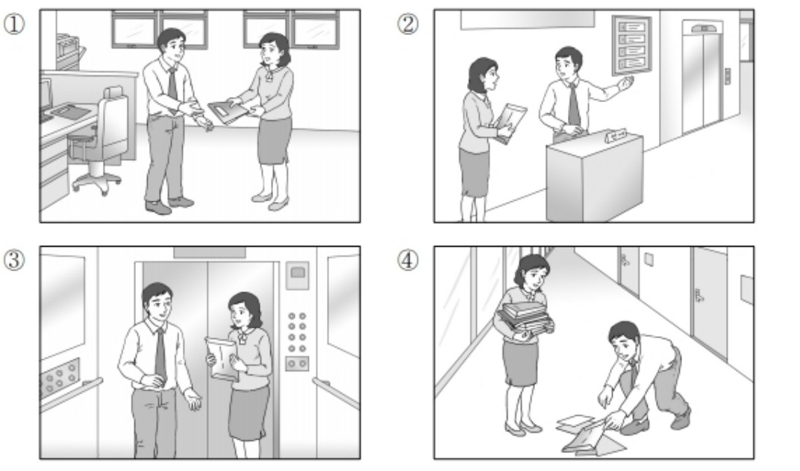
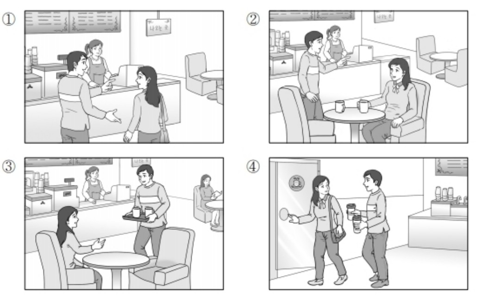
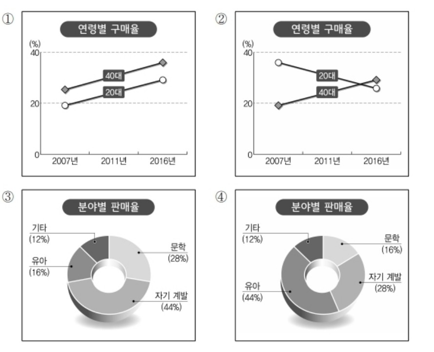

👩 여자: 저, 신입 사원 지원 서류를 내러 왔는데요.
👨 남자: 3층으로 가시면 됩니다. 저쪽 엘리베이터를 이용하세요.
👩 Nữ: À, tôi đến đây để nộp hồ sơ ứng tuyển vị trí nhân viên mới.
👨 Nam: Cô vui lòng lên tầng 3 nhé. Xin hãy sử dụng thang máy ở phía đằng kia ạ.
🎯 Phân tích đáp án
Tại sao chọn ②? Đoạn hội thoại diễn ra tại sảnh/quầy lễ tân. Người nữ cầm hồ sơ đến nộp (지원 서류를 내러 왔는데요), người nam chỉ đường cho cô ấy đi thang máy lên tầng 3 (저쪽 엘리베이터를 이용하세요). Bức tranh số 2 khắc họa chính xác cảnh người nam đứng ở quầy thông tin đang dang tay chỉ hướng về phía thang máy, còn người nữ đang ôm một tập hồ sơ trên tay.
- Hình 1 sai vì người nam đang tiến tới định cầm lấy tập hồ sơ từ tay người nữ, không phải hành động chỉ đường ra thang máy.
- Hình 3 sai vì bối cảnh là hai người đang đứng nói chuyện bên trong thang máy, không đúng với việc đang ở quầy lễ tân để hỏi đường.
- Hình 4 sai vì người nam đang cúi xuống nhặt những tờ giấy bị rơi vãi trên hành lang, hoàn toàn không liên quan đến nội dung đoạn hội thoại.

👩 여자: 응. 난 따뜻한 커피 한 잔 마실래.
👨 남자: 그럼 먼저 가서 자리 잡고 앉아 있어. 내가 가지고 갈게.
👩 Nữ: Ừ. Tớ sẽ uống một cốc cà phê nóng.
👨 Nam: Vậy cậu cứ ra đằng kia tìm chỗ ngồi trước đi. Tớ lấy đồ uống xong sẽ mang ra cho.
🎯 Phân tích đáp án
Tại sao chọn ①? Đoạn hội thoại diễn ra tại một quán cà phê khi hai người chưa gọi món xong. Người nam bảo người nữ cứ ra lấy chỗ ngồi trước đi (먼저 가서 자리 잡고 앉아 있어). Bức tranh số 1 lột tả chính xác thời điểm này: hai người đang đứng trước quầy order, người nam đang nói chuyện và chỉ tay về phía bàn ghế yêu cầu cô gái ra đó ngồi chờ.
- Hình 2 sai vì người nữ đã ngồi sẵn và người nam cầm cốc cà phê mang ra, không đúng với việc người nam đang bảo cô gái "hãy đi tìm chỗ đi".
- Hình 3 sai vì người nam đang bưng khay đồ uống ra phục vụ người nữ đã an tọa.
- Hình 4 sai vì hai người đang cầm cốc cà phê trên tay và bước ra khỏi quán.

🎯 Phân tích đáp án
Tại sao chọn ②? Nội dung cốt lõi của bản tin nói về Tỷ lệ mua sách theo độ tuổi: Độ tuổi 20 giảm xuống (20대 감소) và Độ tuổi 40 tăng lên (40대 높아진). Nhìn vào biểu đồ đường số 2 (Hình 2), ta thấy đường biểu diễn của độ tuổi 20 (20대) đang đi xuống, còn đường biểu diễn của độ tuổi 40 (40대) đang đi lên. Biểu đồ này phản ánh hoàn hảo 100% dữ kiện của đoạn văn.
- Hình 1 sai vì cả đường 20대 và 40대 đều có xu hướng đi lên (tăng), trái ngược với thông tin "20 tuổi giảm".
- Hình 3 & Hình 4 sai vì dữ liệu trong biểu đồ hình tròn (phân theo lĩnh vực) không khớp với nội dung. Ở hình 3 và 4, lĩnh vực Phát triển bản thân (자기 계발) và Thiếu nhi (유아) lại chiếm tỷ lệ lớn nhất (44%), trong khi bài nghe khẳng định Văn học (문학) mới là mảng chiếm tỷ lệ cao nhất.
👩 여자: 벌써 시간이 그렇게 됐어요? 그러고 보니 배가 고프네요.
👨 남자: _____________________________
👩 Nữ: Đã đến giờ đó rồi cơ á? Anh nói tôi mới để ý là thấy đói bụng rồi đấy.
👨 Nam: ( Vậy thì cô thu dọn nhanh nhanh rồi chúng ta cùng đi thôi. )
- ① Mấy giờ thì đến giờ nghỉ trưa thế?
- ② Cô ăn trưa có ngon miệng không?
- ③ Vậy thì cô thu dọn nhanh nhanh rồi chúng ta cùng đi thôi.
- ④ Nhưng bây giờ tôi chưa thấy đói bụng.
🎯 Phân tích đáp án
Tại sao chọn ③? Người nam rủ đi ăn trưa, người nữ đồng ý và cũng đang cảm thấy đói (배가 고프네요). Phản ứng hối thúc tự nhiên nhất của người nam lúc này sẽ là: "빨리 정리하고 나가죠" (Vậy thì cô thu dọn nhanh nhanh lên rồi chúng ta cùng đi thôi).
- ① Sai vì người nam CHÍNH LÀ NGƯỜI CHỦ ĐỘNG THÔNG BÁO đã đến giờ ăn trưa (점심시간인데), không lý gì anh ta lại ngáo ngơ đi hỏi lại "Giờ trưa là mấy giờ".
- ② Sai vì họ CHƯA ĐI ĂN, sự việc chưa diễn ra nên không thể hỏi "Cô ăn có ngon không?" được.
- ④ Sai vì người nữ vừa than đói, người nam đang rủ đi ăn, tự nhiên ông này bảo "Bây giờ tôi chưa đói" thì rất vô duyên và bất hợp lý.
👨 남자: 네. 그런데 연습을 많이 못 해서 잘할 수 있을지 모르겠어요.
👩 여자: _____________________________
👨 Nam: Vâng đúng rồi. Thế nhưng vì tôi không có nhiều thời gian luyện tập nên cũng không biết liệu mình có làm tốt được không nữa.
👩 Nữ: ( Chắc chắn là anh sẽ làm tốt thôi nên đừng có lo lắng quá nhé. )
- ① Sẽ thật tuyệt nếu anh nhất định đến xem trận bóng rổ đấy.
- ② Chắc chắn là anh sẽ làm tốt thôi nên đừng có lo lắng quá nhé.
- ③ Tại dạo này bận quá nên tôi không thể đi xem các trận đấu tập được.
- ④ Trải qua đại hội thể thao xong giờ tôi thấy mệt rã rời.
🎯 Phân tích đáp án
Tại sao chọn ②? Người nam đang cảm thấy lo lắng, tự ti về khả năng thi đấu của mình do thiếu luyện tập (잘할 수 있을지 모르겠어요 - Không biết có làm tốt không nữa). Người nữ cần đáp lại bằng một lời an ủi, động viên tích cực. Câu "잘할 수 있을 테니까 걱정하지 마세요" (Chắc chắn là anh sẽ làm tốt thôi, đừng lo lắng quá nhé) là lựa chọn hoàn hảo nhất.
- ① Sai vì người nam CHÍNH LÀ CẦU THỦ THI ĐẤU (선수로 나간다면서요), anh ta không thể trở thành "khán giả đi xem trận đấu" (경기 보러 오면) được.
- ③ Sai vì "bận rộn không đi luyện tập" là lời biện minh của NGƯỜI NAM, cô gái không có lý do gì để than vãn thay anh ta cả.
- ④ Sai vì đại hội thể thao SẮP DIỄN RA VÀO KỲ TỚI (이번 체육 대회에 나간다), chưa hề kết thúc để mà ngồi than mệt (끝나고 나니까 피곤하네요).
👩 여자: 글쎄요. 잘 모르겠는데 친구들한테 한번 물어볼까요?
👨 남자: _____________________________
👩 Nữ: Chà, tôi cũng không rõ nữa. Hay để tôi thử hỏi đám bạn tôi xem sao nhé?
👨 Nam: ( Vâng, cô làm ơn dò hỏi giúp tôi một chút thì tốt quá. )
- ① Vâng. Tôi đang đi tìm chỗ để làm việc đây.
- ② Vâng. Để tôi làm thay cho anh việc đó nhé.
- ③ Vâng, cô làm ơn dò hỏi tìm giúp tôi một chút thì tốt quá.
- ④ Vâng, người bạn đó hiện đang làm thêm đấy.
🎯 Phân tích đáp án
Tại sao chọn ③? Người nam đang có nhu cầu tìm người làm thêm và nhờ vả cô gái. Cô gái nhiệt tình đề nghị sẽ đi hỏi bạn bè giúp (친구들한테 한번 물어볼까요?). Đáp lại lời đề nghị giúp đỡ đó, người nam bày tỏ sự biết ơn mong muốn cô gái hãy hỏi giúp mình: "네. 좀 알아봐 주면 좋겠어요" (Vâng, cô làm ơn hỏi tìm giúp tôi một chút thì tốt quá) là diễn biến lịch sự và chuẩn xác nhất.
- ① Sai vì người nam ĐANG ĐI TÌM NGƯỜI LÀM (NHÂN VIÊN) chứ không phải bản thân ông ta đi "tìm chỗ làm việc" (일할 곳을 찾고 있어요).
- ② Sai vì người nữ đang ngỏ ý tìm người GIÚP người nam, người nam không có lý do gì để bảo "Để tôi làm thay cho cô" (제가 대신 해 드릴게요).
- ④ Sai vì người nữ CHƯA BIẾT CHẮC CÓ AI KHÔNG (잘 모르겠는데), nên người nam không thể khẳng định "Người bạn đó đang đi làm thêm rồi" được.
👨 남자: 에어컨은 켰어요. 제가 환기하려고 좀 전에 창문을 열어 놔서 그런가 봐요.
👩 여자: _____________________________
👨 Nam: Điều hòa tôi đã bật sẵn rồi đấy. Chắc là do lúc nãy tôi mở toang cửa sổ ra để thông gió nên nhiệt độ phòng mới bị nóng như thế đấy.
👩 Nữ: ( Vậy sao? Thế thì tôi phải đóng cửa sổ lại mới được. )
- ① Vậy sao? Thế thì tôi phải đóng cửa sổ lại mới được.
- ② Thật vậy sao? Thế thì anh bật điều hòa lên giúp tôi với.
- ③ Chuẩn luôn. Thật may là trời không nóng lắm.
- ④ Cũng không rõ nữa. Có lẽ là cửa văn phòng đang mở đấy.
🎯 Phân tích đáp án
Tại sao chọn ①? Người nữ than nóng và định bật điều hòa. Nhưng người nam bảo là "Điều hòa đã bật rồi, do đang MỞ CỬA SỔ (창문을 열어 놔서) nên nó mới nóng". Khi phát hiện ra nguyên nhân làm mất hơi lạnh là do cửa sổ đang mở, hành động hợp lý nhất của người nữ là: "그래요? 그럼 창문을 닫아야겠네요" (Vậy sao? Thế thì phải đóng cửa sổ lại ngay mới được).
- ② Sai vì người nam ĐÃ BẬT ĐIỀU HÒA RỒI (에어컨은 켰어요), không thể yêu cầu "Bật điều hòa giúp tôi" thêm lần nữa.
- ③ Sai vì ngay từ đầu người nữ đang THAN NÓNG CHẢY MỠ (많이 더운 것 같지 않아요?). Bảo "Thật may vì không nóng lắm" là mâu thuẫn hoàn toàn với cảm giác của cô ấy.
- ④ Sai vì người nam đã khẳng định chắc nịch 100% là ANH TA ĐÃ TỰ TAY MỞ CỬA (제가 창문을 열어 놔서). Sự việc đã rõ ràng, không có chuyện mập mờ phỏng đoán "Có lẽ cửa văn phòng đang mở" (아마 열려 있을 거예요) như người mất trí nhớ được.
👨 남자: 아, 네. 그런데 아직 참석 인원이 확실하지 않은데요.
👩 여자: _____________________________
👨 Nam: À vâng. Nhưng mà kẹt nỗi là số lượng người tham dự đến giờ vẫn chưa được chốt chắc chắn đâu cô ơi.
👩 Nữ: ( Vậy thì khi nào chốt được con số chắc chắn anh hãy báo lại cho tôi nhé. )
- ① Danh sách người tham gia tôi đã đưa cho anh từ lúc nãy rồi cơ mà.
- ② Xin trân trọng cảm ơn quý vị đã đến tham dự buổi họp ngày hôm nay.
- ③ Anh cứ việc di chuyển qua phía bên này và ngồi vào chỗ là được ạ.
- ④ Vậy thì khi nào chốt được con số chắc chắn anh hãy báo lại cho tôi nhé.
🎯 Phân tích đáp án
Tại sao chọn ④? Người nữ xin danh sách để xếp chỗ, nhưng người nam báo tin số lượng người tham dự vẫn CHƯA CHỐT (확실하지 않은데요). Để tiếp tục công việc của mình một cách hợp lý, người nữ đành lùi lại và dặn dò: "그럼 확실히 정해지면 알려 주세요" (Vậy thì khi nào chốt chắc chắn xong xuôi anh nhớ báo cho tôi biết nhé). Đây là phương án giải quyết công việc trôi chảy nhất.
- ① Sai vì người nữ đang ĐI XIN DANH SÁCH TỪ NGƯỜI NAM (명단 좀 주시겠어요). Việc cô ấy gắt gỏng bảo "Tôi đã đưa danh sách cho anh rồi mà" (아까 드렸는데요) là lật lọng tráo đổi vai vế hoàn toàn.
- ② Sai vì cuộc họp CHƯA HỀ DIỄN RA (mới đang trong giai đoạn vẽ sơ đồ xếp chỗ). Nên không thể thốt lên câu bế mạc "Cảm ơn quý vị đã đến dự họp" được.
- ③ Sai vì đây là lời thoại của một nhân viên đang hướng dẫn khách mời tại hội trường. Trong khi cô gái này vẫn đang còn phải ngồi ở văn phòng để "vẽ sơ đồ chỗ ngồi" (자리 배치표를 만들어야), hội nghị đã tổ chức đâu mà mời ngồi.
👨 남자: 뭐라고? 장학금 신청이 오늘까지였어? 정확한 거야?
👩 여자: 학교 홈페이지에서 그렇게 봤어. 내가 사무실에 전화해 볼까?
👨 남자: 그래, 해 봐. 컴퓨터는 내가 확인해 볼게.
👨 Nam: Cậu bảo sao cơ? Đăng ký học bổng hạn chót là hôm nay á? Cậu xem thông tin có chuẩn xác không đấy?
👩 Nữ: Tớ đọc rành rành trên trang chủ của trường mà lị. Hay là để tớ thử gọi điện lên văn phòng trường hỏi xem sao nhé?
👨 Nam: Ừ, cậu gọi ngay đi. Còn cái máy tính bị hỏng này cứ để tớ kiểm tra sửa cho.
- ① Gọi điện thoại cho văn phòng nhà trường.
- ② Kiểm tra và sửa chữa lại chiếc máy tính.
- ③ Nộp đơn đăng ký xin học bổng.
- ④ Lên mạng xem trang chủ của nhà trường.
🎯 Phân tích đáp án
Tại sao chọn ①? Đề bài yêu cầu tìm "Hành động TIẾP THEO của người Nữ". Khi máy tính bị hỏng và không thể đăng ký học bổng online, người nữ đã chủ động nảy ra phương án chữa cháy: "내가 사무실에 전화해 볼까?" (Hay để tớ gọi điện lên văn phòng nhé?). Người nam gật đầu giục giã: "그래, 해 봐" (Ừ, cậu gọi ngay đi). Nhận được sự đồng thuận, hành động tất yếu duy nhất mà cô gái sẽ làm ngay lúc này chính là Gọi điện thoại cho văn phòng (사무실에 전화한다).
- ② Sai vì nhiệm vụ "Kiểm tra sửa máy tính" (컴퓨터는 내가 확인해 볼게) là phần việc do NGƯỜI NAM xắn tay áo ra làm giúp.
- ③ Sai vì hiện tại máy tính ĐANG HỎNG (컴퓨터가 안 되네), lấy công cụ gì mà đòi "Đăng ký học bổng" (신청한다) ngay lập tức lúc này được!
- ④ Sai vì việc "Xem trang chủ của trường" (학교 홈페이지에서 봤어) là việc mà cô gái ĐÃ LÀM TỪ TRƯỚC RỒI nên mới biết được deadline là hôm nay.
👨 남자: 몸이 안 좋으면 빨리 집에 가서 쉬세요. 나머지 전시회 상품은 제가 정리할 테니까요.
👩 여자: 아니에요. 아직 설명 자료도 못 만들었는데요.
👨 남자: 네, 그럼 다녀오세요. 이건 제가 정리하고 있을게요.
👨 Nam: Cô không được khỏe thì mau mau đi về nhà nghỉ ngơi đi. Đống sản phẩm triển lãm còn lại cứ để đấy tôi sắp xếp dọn dẹp cho.
👩 Nữ: Ấy không được đâu anh, tôi vẫn còn chưa soạn xong tài liệu thuyết trình cơ mà.
👨 Nam: Vâng, vậy cô chạy ra hiệu thuốc mua đi. Mấy thứ này tôi sẽ tiếp tục sắp xếp giúp cho.
- ① Đi về nhà.
- ② Soạn thảo tài liệu.
- ③ Dọn dẹp sắp xếp đống sản phẩm.
- ④ Đi mua thuốc đau đầu.
🎯 Phân tích đáp án
Tại sao chọn ④? Cơn đau đầu hành hạ khiến người nữ phải thốt lên ngay từ đầu: "잠깐 약국 좀 다녀올게요. 두통약 좀 먹어야겠어요" (Tôi chạy ra hiệu thuốc lát đây, phải uống thuốc đau đầu mới được). Dù người nam khuyên nên về nhà nghỉ luôn đi, cô ấy vẫn TỪ CHỐI vì còn vướng bận việc soạn tài liệu. Cuối cùng, người nam nhượng bộ: "네, 그럼 다녀오세요" (Vâng, vậy cô cứ đi ra hiệu thuốc đi). Vậy hành động duy nhất cô ấy thực hiện ngay khi rời khỏi phòng là chạy đi mua thuốc đau đầu (두통약을 사러 간다) để uống rồi về làm tiếp.
- ① Sai vì cô gái đã TỪ CHỐI LỜI KHUYÊN VỀ NHÀ (아니에요... 못 만들었는데요) do chưa làm xong tài liệu. Cô ấy không đi về nhà lúc này.
- ② Sai vì cô ấy đang bị đau đầu dữ dội, phải "Chạy ra hiệu thuốc trước (약국 다녀올게요)" rồi mới có sức về làm tài liệu sau. Làm tài liệu không phải là hành động ngay lập tức tiếp theo.
- ③ Sai vì nhiệm vụ "Dọn dẹp sản phẩm triển lãm" (전시회 상품은 제가 정리할 테니까요) đã được NGƯỜI NAM ôm trọn gói giúp cô gái.
👨 남자: 베란다에 있는데....... 누나, 자전거 타려고? 꺼내 줄까?
👩 여자: 아니. 내가 꺼낼게. 너도 같이 안 나갈래? 날씨도 좋은데 공원에서 같이 운동하자.
👨 남자: 그래. 그럼 옷 좀 갈아입고 나올게.
👨 Nam: Em để ở ngoài ban công ấy... Chị định đi xe đạp à? Để em lấy ra cho chị nhé?
👩 Nữ: Không cần đâu, để chị tự lấy được rồi. Em có muốn ra ngoài cùng không? Thời tiết đang đẹp thế này, hai chị em mình ra công viên tập thể dục đi.
👨 Nam: Ok luôn. Vậy chị đợi em thay quần áo chút rồi em ra ngay nhé.
- ① Đi lấy chiếc xe đạp ra.
- ② Đi thay bộ quần áo khác.
- ③ Tập thể dục tại công viên.
- ④ Cùng đi ra ngoài với em trai.
🎯 Phân tích đáp án
Tại sao chọn ①? Đề bài yêu cầu tìm "Hành động TIẾP THEO của người Nữ". Người nữ hỏi xe đạp ở đâu, người nam bảo để ở ban công và ngỏ ý muốn lấy giúp. Tuy nhiên, người nữ đã từ chối và nói: "아니. 내가 꺼낼게" (Không cần đâu, chị sẽ tự lấy). Vì vậy, hành động ngay tức khắc tiếp theo mà cô ấy thực hiện là đi ra ban công để Lấy xe đạp ra (자전거를 꺼낸다).
- ② Sai vì hành động "Thay quần áo" (옷 좀 갈아입고 나올게) là việc mà NGƯỜI NAM chuẩn bị đi làm.
- ③ Sai vì "Tập thể dục" (운동하자) là mục đích cuối cùng ở công viên. Trước khi tập thì cô ấy phải lấy xe đạp ra và đợi cậu em thay đồ xong đã.
- ④ Sai vì người em trai còn phải đi thay quần áo đã, nên hai chị em chưa thể "cùng nhau ra ngoài" (같이 나간다) ngay lúc này được.
👩 여자: 여기 이 카드로 계산해 주세요. 그런데 집까지 배달도 해 주시나요?
👨 남자: 물론이죠. 여기 영수증 있습니다. 이거 가지고 안내 센터에 가서 신청하면 됩니다.
👩 여자: 아, 네. 고맙습니다. 그런데 언제쯤 물건을 받을 수 있을까요?
👨 남자: 보통 두세 시간 정도 걸립니다.
👩 Nữ: Anh quẹt thẻ này thanh toán giúp tôi nhé. Mà cửa hàng có hỗ trợ giao hàng tận nhà không nhỉ?
👨 Nam: Đương nhiên là có ạ. Gửi lại chị hóa đơn này. Chị cứ mang tờ hóa đơn này ra quầy thông tin để làm thủ tục đăng ký là được ạ.
👩 Nữ: À, vâng. Tôi cảm ơn anh. Nhưng mà khoảng bao lâu thì tôi mới nhận được hàng vậy?
👨 Nam: Dạ thông thường sẽ mất tầm hai đến ba tiếng đồng hồ ạ.
- ① Thanh toán bằng thẻ tín dụng.
- ② Đi đến quầy thông tin.
- ③ Làm thủ tục đăng ký giao hàng.
- ④ Ở nhà và nhận hàng hóa.
🎯 Phân tích đáp án
Tại sao chọn ②? Đề bài yêu cầu tìm "Hành động TIẾP THEO của người Nữ". Người nữ muốn được giao hàng tận nhà, người nhân viên (nam) đã hướng dẫn: "이거 가지고 안내 센터에 가서 신청하면 됩니다" (Chị mang hóa đơn này đến quầy thông tin rồi đăng ký). Cô gái đã gật đầu đồng ý (아, 네). Dựa vào trình tự thời gian (가서 - đi đến rồi mới đăng ký), hành động đầu tiên cô ấy phải thực hiện lúc này là di chuyển Đi đến quầy thông tin (안내 센터에 간다).
- ① Sai vì hành động "Thanh toán bằng thẻ" ĐÃ HOÀN TẤT RỒI (cô ấy đã nhận lại biên lai - 여기 영수증 있습니다).
- ③ CẨN THẬN BẪY: Việc "Đăng ký giao hàng" (신청을 한다) là mục đích chính, nhưng để làm được việc đó thì cô ấy phải DI CHUYỂN ĐẾN QUẦY THÔNG TIN TRƯỚC (안내 센터에 간다). Về mặt trình tự hành động cơ học, bước "đi đến" xảy ra trước bước "đăng ký".
- ④ Sai vì việc "Nhận hàng ở nhà" (집에서 물건을 받는다) phải mất 2-3 tiếng nữa (두세 시간 정도) mới diễn ra, không phải là hành động ngay tiếp theo.
👨 남자: 응. 나도 들었어. 무료로 적성 검사도 해 준다고 그러던데.
👩 여자: 그래? 한번 해 볼 만하겠다. 어떻게 신청하면 되는 거지?
👨 남자: 음. 내가 문의해 보고 알려 줄게.
👨 Nam: Ừ tớ cũng nghe ngóng được rồi. Người ta bảo là còn cho làm bài kiểm tra trắc nghiệm năng khiếu hoàn toàn miễn phí nữa cơ.
👩 Nữ: Tuyệt thế cơ á? Thế thì cũng đáng để đi làm thử xem sao đấy. Mà thủ tục đăng ký như thế nào vậy cậu?
👨 Nam: Ừm. Để tớ đi hỏi thăm tìm hiểu thử rồi báo lại cho cậu nhé.
- ① Người nữ hiện tại đang công tác và làm việc tại Ủy ban Quận.
- ② Người nam sẽ đi tìm hiểu xem xét thông tin về chương trình này.
- ③ Người nữ đã từng có kinh nghiệm tham gia vào chương trình này trong quá khứ.
- ④ Người nam chưa từng nghe thấy bất kỳ thông tin nào về chương trình này.
🎯 Phân tích đáp án
Tại sao chọn ②? Khi người nữ thắc mắc không biết cách thức đăng ký chương trình như thế nào (어떻게 신청하면 되는 거지?), người nam đã nhiệt tình nhận việc: "내가 문의해 보고 알려 줄게" (Để tớ đi hỏi thăm (tìm hiểu) thử rồi báo lại cho). Hành động hứa hẹn sẽ "hỏi thăm/tìm hiểu (문의해 보고)" hoàn toàn trùng khớp với nội dung đáp án ②: 남자는 프로그램에 대해 알아볼 것이다 (Người nam sẽ đi tìm hiểu thông tin về chương trình).
- ① Sai vì người nữ nói "Nghe đồn bên Ủy ban Quận đang vận hành..." (구청에서 운영한대), chứng tỏ cô ấy là người ngoài nghe ngóng được, chứ không phải "Đang làm việc tại Ủy ban Quận" (구청에서 일하고 있다).
- ③ Sai vì người nữ cảm thán "한번 해 볼 만하겠다" (Thật đáng để LÀM THỬ xem sao), tức là cô ấy CHƯA TỪNG THAM GIA (참여한 적이 없다).
- ④ Sai bét vì ngay câu thứ 2, người nam đã khẳng định: "응. 나도 들었어" (Ừ, tớ CŨNG NGHE RỒI). Đáp án bảo "Chưa nghe bao giờ" là nói ngược sự thật.
- ① Chuyến tàu này hiện tại đang nằm bất động đứng yên một chỗ.
- ② Chuyến tàu này đã khởi hành cất bước đi từ ga Seoul.
- ③ Chuyến tàu này trong chốc lát nữa sẽ tiến vào và dừng ở ga Daejeon.
- ④ Chuyến tàu cao tốc KTX hướng đi Busan đã gặp phải sự cố hỏng hóc.
🎯 Phân tích đáp án
Tại sao chọn ③? Loa phát thanh trên tàu thông báo rằng: "잠시 후 다음 정차 역인 대전역에서..." (Lát nữa đây ở ga dừng tiếp theo là ga Daejeon... chúng ta sẽ dừng lâu hơn). Việc loa báo "lát nữa" (잠시 후) sẽ tiến vào "ga dừng tiếp theo" (다음 정차 역) chứng tỏ con tàu sắp sửa tiến vào ga Daejeon. Đáp án ③: "이 열차는 잠시 후에 대전역에 도착한다 (Chuyến tàu này lát nữa sẽ đến ga Daejeon)" là hoàn toàn chính xác.
- ① Sai vì tàu VẪN ĐANG DI CHUYỂN (chỉ là đi chậm lại do công trường: 천천히 운행하고 있습니다), không hề "đứng yên bất động" (멈춰 있다).
- ② CẨN THẬN BẪY HƯỚNG ĐI: Loa báo đây là tàu "ĐANG ĐI HƯỚNG VỀ SEOUL (서울로 가는)", tức là Seoul là ĐIỂM ĐẾN. Đáp án ② dám bịa đặt Seoul là "Điểm khởi hành" (서울역에서 출발했다) là sai lệch lộ trình.
- ④ Sai vì tàu KTX đi Busan BÌNH THƯỜNG KHÔNG HỎNG HÓC GÌ CẢ, nó chạy nhanh hơn nên con tàu này phải nhường đường cho nó "đi vượt lên trước" (KTX 열차를 먼저 보내기 위해). Chữ "hỏng hóc" (고장이 났다) là hoàn toàn bịa đặt.
- ① Bắt đầu từ hôm nay, trong vòng 1 tháng, vé sẽ được tung ra bán với mức giá giảm một nửa.
- ② Vào năm ngoái, bể bơi này cũng đã từng tung ra chương trình bán vé giảm giá dành cho gia đình.
- ③ Năm nay người dân có thể tận hưởng bể bơi ngoài trời sớm hơn so với thời điểm của năm ngoái.
- ④ Bể bơi đang áp dụng chương trình khuyến mãi mua 1 vé tặng thêm 1 vé.
🎯 Phân tích đáp án
Tại sao chọn ③? Bản tin đời sống thông báo một tin cực hot: "야외 수영장이 작년보다 일주일 빨리 개장한다는 소식입니다" (Có tin là Bể bơi ngoài trời sẽ MỞ CỬA SỚM HƠN 1 TUẦN SO VỚI NĂM NGOÁI). Việc bể bơi mở cửa sớm hơn năm ngoái đồng nghĩa với việc người dân "Có thể sử dụng bể bơi sớm hơn năm ngoái (작년보다 일찍 야외 수영장을 이용할 수 있다)". Đáp án ③ là một phép suy luận quá rõ ràng.
- ① CẨN THẬN BẪY SỐ LIỆU: Bể bơi chỉ bán vé nửa giá (50%) trong vòng "1 TUẦN sau khi khai trương" (개장 후 일주일 동안은). Chứ không phải chơi sang bán nửa giá suốt "1 tháng" (한 달 동안) như đáp án lừa bịp.
- ② Sai vì bản tin nhấn mạnh "BẮT ĐẦU TỪ NĂM NAY mới mở bán vé gia đình" (올해부터 가족 티켓 판매를 시작). Tức là năm ngoái CHƯA HỀ CÓ loại vé này (작년에도... 판매했다 là sai).
- ④ Sai vì chính sách khuyến mãi là "Gia đình 4 người đi thì 1 người miễn phí" (4인 가족 방문 시 1명 무료), chứ KHÔNG CÓ sự kiện "Mua 1 tặng 1" (한 장 사면 한 장 더 주는 행사) nào ở đây cả.
👨 남자: 네. 관객을 위해 다양한 서비스를 마련한 것이 효과적이었다고 생각합니다. 매달 마지막 목요일에는 지휘자가 관객들에게 음악에 대해 해설해 주는 '음악 이야기' 시간을 갖습니다. 그리고 금요일 공연을 관람하는 경우 1층 카페에서 무료로 커피를 제공하고 있습니다. 그래서 작년에 비해 '정오의 콘서트' 관람객 수가 많이 늘어난 것 같습니다.
👨 Nam (Đại diện): Vâng, đúng vậy. Chúng tôi cho rằng việc dốc sức tổ chức thêm vô vàn các dịch vụ đi kèm đa dạng nhằm tri ân khán giả đã phát huy tác dụng vô cùng mỹ mãn. Cụ thể, vào ngày thứ Năm cuối cùng của mỗi tháng, chúng tôi sẽ tổ chức chuyên mục 'Câu chuyện âm nhạc', nơi mà chính vị nhạc trưởng sẽ đích thân đứng ra thuyết minh và giải thích tường tận về các tác phẩm âm nhạc cho khán giả nghe. Thêm vào đó, đối với những khán giả đến xem buổi biểu diễn vào ngày thứ Sáu, chúng tôi sẽ hào phóng đài thọ hoàn toàn miễn phí cà phê tại quán cafe tầng 1. Có lẽ nhờ vào những chiến lược nịnh khách đó mà năm nay, số lượng khán giả đổ xô đến với 'Buổi hòa nhạc buổi trưa' đã tăng đột biến so với năm ngoái.
- ① Chương trình 'Buổi hòa nhạc buổi trưa' mới chính thức được ra mắt lần đầu tiên vào năm nay.
- ② Trung tâm nghệ thuật đang vô cùng đau đầu lo lắng vì lượng khán giả ghé thăm nhà hát đang bị sụt giảm.
- ③ Vào ngày thứ Sáu, nếu mua cà phê tại quán cafe thì khách hàng sẽ được tặng kèm vé xem hòa nhạc.
- ④ Mỗi tháng một lần, sẽ có một khoảng thời gian đặc biệt để vị nhạc trưởng đích thân đứng ra giải thích về âm nhạc.
🎯 Phân tích đáp án
Tại sao chọn ④? Đại diện Trung tâm Nghệ thuật giới thiệu về một dịch vụ cực kỳ ăn khách: "매달 마지막 목요일에는 지휘자가... 음악에 대해 해설해 주는 '음악 이야기' 시간을 갖습니다" (Vào ngày thứ Năm cuối cùng CỦA MỖI THÁNG, sẽ có chuyên mục Nhạc trưởng đứng ra GIẢI THÍCH (해설) về âm nhạc). Việc diễn ra vào "Thứ Năm cuối cùng của mỗi tháng" đồng nghĩa với tần suất "Mỗi tháng một lần" (한 달에 한 번). Do đó, đáp án ④ là sự diễn giải lại 100% sự kiện này.
- ① Sai vì người nam có so sánh lượng khách "tăng vọt SO VỚI NĂM NGOÁI" (작년에 비해). Chứng tỏ chương trình này ĐÃ TỒN TẠI TỪ NĂM NGOÁI, chứ không phải "Năm nay mới bắt đầu lần đầu" (올해 처음 시작되었다).
- ② Sai vì lượng khán giả đang TĂNG VỌT CHÓNG MẶT (많이 늘어난 것 같습니다) và cực kỳ nổi tiếng, họ đang hốt bạc chứ không có gì phải "Lo lắng vì lượng khách giảm" (수가 줄어서 걱정이다) cả.
- ③ CẨN THẬN BẪY LẬT NGƯỢC: Sự thật là "Nếu ĐI XEM HÒA NHẠC (공연을 관람하는 경우) -> Thì được TẶNG CÀ PHÊ MIỄN PHÍ". Đáp án ③ lừa đảo đảo ngược lại trật tự: "Nếu MUA CÀ PHÊ -> Thì được TẶNG VÉ HÒA NHẠC" là một cú lừa ngoạn mục!
👩 여자: 아, 다음 주에 여행 가는데 인터넷으로 옷 하나 사려고요. 백화점이나 쇼핑몰에 직접 가는 것보다 시간도 아낄 수 있고 가격도 저렴하거든요.
👨 남자: 저는 인터넷으로 사는 것도 시간이 꽤 걸리던데요. 그리고 아무래도 옷은 가서 입어 보고 고르는 게 좋지 않아요? 색깔이나 모양이 화면으로 보는 것과 다른 경우도 많잖아요.
👩 Nữ: À, tuần sau tôi có một chuyến đi du lịch nên đang định tậu một bộ đồ trên mạng. Mua đồ online thế này vừa giúp tiết kiệm khối thời gian so với việc phải lết xác trực tiếp ra mấy khu bách hóa hay trung tâm thương mại, mà giá cả lại còn mềm hơn nhiều nữa chứ.
👨 Nam: Cô thì bảo nhanh chứ cá nhân tôi thấy cái khâu lướt mạng lựa đồ cũng ngốn một đống thời gian đấy chứ đùa. Với lại, nói gì thì nói, riêng khoản quần áo thì chẳng phải việc thân chinh đến tận nơi mặc thử rồi mới chốt đơn sẽ luôn là phương án an toàn và tốt nhất hay sao? Thiếu gì những trường hợp dở khóc dở cười khi đồ nhận về màu sắc hay form dáng chả ăn nhập gì so với những bức hình ảo lòi trên màn hình mạng mà cô thấy đâu.
- ① Phàm là cứ mỗi khi chuẩn bị đi du lịch thì chúng ta phải sắm sửa quần áo mới.
- ② Khi mua sắm, chúng ta bắt buộc phải cân đo đong đếm và so kè kỹ lưỡng về mặt giá cả.
- ③ Đối với mặt hàng quần áo, tốt nhất là nên đi đến tận nơi mặc thử trực tiếp rồi mới vung tiền mua.
- ④ Tuyệt đối không được phép vung phí quá nhiều thời gian vào những thú vui mua sắm vô bổ.
🎯 Phân tích đáp án
Tại sao chọn ③? Đề bài yêu cầu tìm "Suy nghĩ trọng tâm của người Nam". Người nữ thuộc phe "Mua hàng Online" vì cho rằng nó rẻ và tiết kiệm thời gian. Tuy nhiên, người Nam đã lập tức phản bác lại luận điểm này và đưa ra quan điểm cá nhân: "옷은 가서 입어 보고 고르는 게 좋지 않아요?" (Áo quần thì đến tận nơi MẶC THỬ VÀ LỰA CHỌN chẳng phải tốt hơn sao?). Anh ta chứng minh bằng lý do mua online rất hay bị sai màu, khác hình dáng thật. Suy nghĩ bảo thủ phải "mặc thử rồi mới mua" này trùng khớp hoàn hảo 100% với đáp án ③: "옷은 직접 입어 보고 사는 게 좋다 (Quần áo thì nên mặc thử trực tiếp rồi mới mua)".
- ① Sai vì người nam CHẢ THÈM QUAN TÂM đến cái triết lý rườm rà "Đi du lịch là phải mua đồ mới". Việc sắm đồ đi du lịch chỉ là cái BỐI CẢNH (Lý do) mà cô gái nêu ra để thanh minh cho việc dán mắt vào mạng thôi.
- ② Sai vì việc "So kè giá cả / Giá rẻ" (가격도 저렴하거든요) là lập luận ngụy biện của NGƯỜI NỮ. Người nam không hề nhắc một chữ nào đến "tiền bạc" hay "giá cả" cả, anh ta chỉ quan tâm đến chất lượng (màu sắc, form dáng thật).
- ④ Sai vì người nam than vãn "Mua online cũng TỐN NHIỀU THỜI GIAN" (시간이 꽤 걸리던데요) chỉ để PHẢN BÁC LẠI lời bốc phét "Mua online tiết kiệm thời gian" của cô gái. Chứ ổng không phải là nhà hiền triết lên lớp dạy đời rằng "Đừng lãng phí thời gian vào việc mua sắm" (쇼핑으로 시간을 낭비하면 안 된다).
👩 여자: 아이들이 어려서 그러는 건데 그때마다 뭐라고 하는 건 안 좋은 거 아니야?
👨 남자: 아무리 어려도 자기가 무엇을 잘못했는지는 바로 알려 줘야지. 그래야 다음에 같은 실수를 반복하지 않지.
👩 Nữ: Bọn trẻ con đứa nào thì cũng là những trang giấy trắng ngây thơ nên mới lỡ dại làm bậy, chứ hễ cứ chực chờ sẩy ra một ly một lai là lại nhảy đổng lên mắng mỏ đòn roi chúng nó thì cũng đâu phải là cách hay?
👨 Nam: Cho dù chúng nó có nhỏ tuổi đến mức nào đi chăng nữa, thì khi làm bậy, chúng ta cũng bắt buộc phải ngay lập tức cảnh cáo và chỉ rõ ra cho chúng biết bản thân chúng đã làm sai ở điểm nào. Có rèn giũa như thế thì sau này chúng mới không bị ngựa quen đường cũ mà dẫm lên vết xe đổ lặp lại cái lỗi sai ngu ngốc đó nữa chứ.
- ① Trong những năm tháng ấu thơ, dù trẻ con có mắc lỗi đến dăm ba lần đi chăng nữa thì cũng hoàn toàn không sao cả.
- ② Dù cho những đứa trẻ có gây ra lỗi lầm tày đình thì chúng ta vẫn phải bao dung cưng nựng yêu thương chúng.
- ③ Tuyệt đối không được phép sử dụng những lời lẽ quá mức cay nghiệt tàn nhẫn đối với trẻ nhỏ.
- ④ Bắt buộc phải giáo dục và khai sáng cho những đứa trẻ nhận thức rõ ràng được lỗi lầm của chính bản thân mình.
🎯 Phân tích đáp án
Tại sao chọn ④? "Suy nghĩ trọng tâm" là triết lý dạy con của người đàn ông. Ngay từ câu đầu tiên, anh ta đã bức xúc phê phán thói quen "nuông chiều mù quáng khi con làm sai" của các phụ huynh ngày nay. Mặc cho người nữ biện minh "trẻ con còn nhỏ", anh ta vẫn kiên quyết giữ vững lập trường thép: "아무리 어려도 자기가 무엇을 잘못했는지는 바로 알려 줘야지" (Dù có nhỏ đến mấy thì bố mẹ cũng PHẢI CHỈ RÕ NGAY LẬP TỨC CHO CHÚNG BIẾT CHÚNG ĐÃ LÀM SAI CÁI GÌ). Việc "chỉ ra lỗi sai cho chúng biết" chính là nội dung của đáp án ④: "아이들에게 자기 잘못을 알게 해야 한다 (Phải làm cho bọn trẻ biết được lỗi sai của mình)".
- ① Sai vì người nam mong muốn CHẶN ĐỨNG việc lặp lại sai lầm (그래야 다음에 같은 실수를 반복하지 않지). Ông ta cực ghét việc trẻ con cứ liên tục làm sai. Việc bảo "Mắc lỗi nhiều lần cũng không sao" (여러 번 실수해도 괜찮다) là tư tưởng trái ngược hoàn toàn.
- ② Sai bét nhè vì đây chính là THÓI HƯ TẬT XẤU MÀ ÔNG TA ĐANG LÊN ÁN CHỬI BỚI (무조건 예뻐만 하는 건 문제인 것 같아 - Yêu chiều vô điều kiện là CÓ VẤN ĐỀ).
- ③ CẨN THẬN BẪY: Mặc dù ông bố khuyên phải "Chỉ ra lỗi sai (알려 줘야지)", nhưng ông ta KHÔNG HỀ cổ xúy việc dùng "bạo lực ngôn từ / mắng chửi thậm tệ tàn nhẫn" (심하게 말을 하면 안 된다). Lời biện minh "Cứ cự nự chửi bới mãi thì không tốt (그때마다 뭐라고 하는 건 안 좋은)" là của NGƯỜI NỮ, chứ người nam không bàn đến độ nặng nhẹ của ngôn từ.
👨 남자: 그래서 내가 기차 타자고 했잖아. 기차 타면 여행 기분도 더 날 텐데 말이야.
👩 여자: 하지만 애들 짐도 많고 부모님 선물도 있고 하니까 차가 편하지 않아?
👨 남자: 그거야 내가 들면 되지. 잘못하다가는 부모님 뵙는 시간보다 차 안에 있는 시간이 더 많겠어.
👨 Nam: Thấy chưa, thế nên từ đầu anh mới gào lên bảo là nhà mình đi tàu hỏa đi. Ngồi xình xịch trên tàu hỏa thì mới có được cái vibe cảm giác phấn khích của một chuyến đi du lịch chứ.
👩 Nữ: Khổ lắm nhưng mà đống hành lý bỉm sữa lỉnh kỉnh của lũ trẻ, rồi lại còn cả tá quà cáp cồng kềnh mua biếu ông bà nội ngoại nữa. Đi ô tô tự lái có cốp để đồ chẳng phải là khỏe re và nhàn nhã hơn hay sao?
👨 Nam: Dăm ba cái đồ đó thì cứ để anh xách tay là xong chuyện cơ mà. Cứ cái tình trạng bò lê lết nếm mùi tắc đường thế này, khéo cái khoảng thời gian khốn khổ bị nhốt giam lỏng ở trong xe ô tô của nhà mình còn dài dằng dặc hơn cả cái thời gian được ngồi chơi nói chuyện với ông bà nữa mất.
- ① Tốt nhất là nên xách balo lên và đi du lịch vào những dịp nghỉ lễ kéo dài.
- ② Nếu chúng ta lựa chọn đi bằng tàu hỏa, chúng ta sẽ tiết kiệm và rút ngắn được đáng kể thời gian di chuyển.
- ③ Vào những dịp nghỉ lễ mà xe cộ ken đặc nghẹt thở, chúng ta bắt buộc phải dồn 200% sự cẩn thận khi lái xe.
- ④ Nếu đi bằng ô tô, điểm cộng lớn nhất là chúng ta có thể tống một đống hành lý lên xe vô cùng tiện lợi.
🎯 Phân tích đáp án
Tại sao chọn ②? "Suy nghĩ trọng tâm" là nỗi bực dọc của người chồng. Ngay từ đầu, ông chồng đã oán trách bà vợ vì không nghe lời khuyên: "그래서 내가 기차 타자고 했잖아" (Thế nên anh mới bảo là đi TÀU HỎA đi cơ mà). Cuối đoạn, ông ấy cay đắng than vãn về hậu quả của việc đi ô tô: "잘못하다가는 부모님 뵙는 시간보다 차 안에 있는 시간이 더 많겠어" (Cứ đà này thì thời gian ngồi ngâm mình trong ô tô còn nhiều hơn cả thời gian gặp mặt bố mẹ). Việc cằn nhằn "Ngồi ô tô thì tốn quá nhiều thời gian", chứng tỏ suy nghĩ sâu xa của ông ấy là: "Nếu đi TÀU HỎA thì thời gian di chuyển ĐÃ ĐƯỢC RÚT NGẮN RẤT NHIỀU RỒI (기차를 타면 이동 시간을 줄일 수 있다)". Đáp án ② là sự suy luận logic hoàn mỹ.
- ① Sai vì cặp vợ chồng này đang đi "Về quê thăm bố mẹ" (부모님 뵙는 시간), chứ không phải đi "Du lịch" (여행). Cảm giác "giống như đi du lịch" chỉ là lời bốc phét cảm thán của ông chồng khi đi tàu thôi.
- ③ Sai vì ông chồng đang BỰC MÌNH VÌ TẮC ĐƯỜNG MẤT THỜI GIAN, chứ ổng không hề run rẩy sợ hãi tai nạn để mà thốt ra lời khuyên "Bà con ơi hãy lái xe cẩn thận nhé" (조심해서 운전해야 한다).
- ④ Sai vì đây là LÝ DO NGỤY BIỆN CỦA BÀ VỢ (애들 짐도 많고... 차가 편하지 않아?). Bà vợ thích ô tô vì tiện chở đồ, còn ông chồng thì CĂM GHÉT ô tô vì tắc đường. Đề bài hỏi suy nghĩ của người NAM.
👨 남자: 요즘 사람들은 무엇이든지 1등이 되고 싶어 하는 것 같습니다. 하지만 저는 최고가 되기보다는 계속 최고를 향해 가는 사람이 되고 싶습니다. 내가 최고라고 생각하는 순간 거기에 만족하게 되니까요. 나보다 더 나은 사람이 있을 거라 생각하며 저는 앞으로도 항상 최선을 다할 겁니다.
👨 Nam (Chủ quán): Tôi thấy rằng con người thời đại ngày nay dường như mang một thứ khao khát điên cuồng, đó là làm bất cứ chuyện gì cũng phải vươn lên leo bằng được lên cái bục số 1. Thế nhưng đối với tôi, tôi không thèm khát cái danh xưng 'đỉnh cao số 1', mà thay vào đó, tôi muốn mình trở thành một con người mang ý chí MIỆT MÀI TIẾN LÊN KHÔNG NGỪNG NGHỈ để hướng về cái đỉnh cao đó. Bởi vì tôi ngộ ra một chân lý rằng: Cái khoảnh khắc mà ta tự huyễn hoặc và vỗ ngực xưng tên mình là số 1, cũng chính là lúc ta tự cho phép bản thân ngủ quên trên chiến thắng và trở nên tụt lùi tự mãn. Với niềm tin sắt đá rằng ở ngoài kia vẫn luôn có những cao nhân ẩn dật tài giỏi hơn mình vạn lần, tôi tự hứa với lòng mình sẽ luôn luôn dốc cạn toàn bộ sức lực để nỗ lực không ngừng vươn lên trong tương lai.
- ① Cốt lõi quan trọng nhất là phải duy trì một thái độ nỗ lực phấn đấu miệt mài không ngừng nghỉ.
- ② Để có thể leo lên được cái bục vinh quang số 1 đỉnh cao, bạn bắt buộc phải có một niềm tin sắt đá vào chính bản thân mình.
- ③ Để có thể gặt hái được sự thành công, bộ não của bạn cần phải nảy số và tung ra những ý tưởng đột phá đầy tính sáng tạo.
- ④ Bạn bắt buộc phải luôn luôn đặt những thực khách tìm đến nhà hàng lên vị trí ưu tiên tối thượng hàng đầu.
🎯 Phân tích đáp án
Tại sao chọn ①? Triết lý sống của vị chủ quán này thể hiện rực rỡ qua 2 câu thoại sống còn: "저는 최고가 되기보다는 계속 최고를 향해 가는 사람이 되고 싶습니다" (Tôi muốn trở thành một kẻ LIÊN TỤC (KHÔNG NGỪNG) tiến về phía đỉnh cao) và "저는 앞으로도 항상 최선을 다할 겁니다" (Tôi sẽ LUÔN LUÔN DỐC HẾT SỨC MÌNH). Tư tưởng không màng hư danh số 1 để "liên tục nỗ lực vươn lên" chính là định nghĩa hoàn hảo nhất của "Thái độ NỖ LỰC KHÔNG NGỪNG NGHỈ (끊임없이 노력하는 자세가 중요하다)". Đáp án ① như sinh ra là để dành cho câu này.
- ② Sai vì ông chủ VỨT BỎ SỰ KIÊU NGẠO VÀ TỰ MÃN, ông tự nhủ "ngoài kia luôn có người giỏi hơn mình" (나보다 더 나은 사람이 있을 거라 생각하며). Lời giáo huấn "Phải có NIỀM TIN VÀO BẢN THÂN" (자신을 믿어야 한다) là hoàn toàn sai lệch với tinh thần Khiêm Tốn của bài nói.
- ③ Sai vì dù cái tên quán có vẻ "Sáng tạo" (창의적인 생각), nhưng triết lý mà ổng rút ruột gan ra dạy đời là SỰ CẦN CÙ NỖ LỰC (최선을 다할 겁니다), chứ ổng không đứng lên lớp dạy cho học sinh môn "Kỹ năng làm giàu bằng ý tưởng khởi nghiệp".
- ④ CẨN THẬN BẪY CHỮ "SỐ 1": Cái tên "Quán ăn thứ hai" (두 번째) mang hàm ý nhường ngôi "Thứ 1" (첫 번째) cho những sự thật là: "Ông chủ không bao giờ tự mãn/Ông chủ luôn còn nhiều thứ phải phấn đấu". Đáp án ④ lợi dụng chữ "Thứ 1" để bịa ra đạo lý "Khách hàng là thượng đế (손님들을 첫 번째로 생각해야 한다)" - nghe thì bùi tai nhưng hoàn toàn KHÔNG CÓ NHẮC ĐẾN TRONG BÀI.
👨 남자: 우리 가게라....... 좋지요. 하지만 만만하게 생각해서는 안 될 것 같은데요. 그런 가게는 사람들이 많이 오가는 곳에 차려야 성공할 수 있는데 그런 데는 가게도 비싸고요.
👩 여자: 시장에서 피자 가게 하는 친구가 그러는데 맛만 좋으면 가게가 어디에 있든지 손님들이 다 알아서 찾아온대요.
👨 남자: 그래도 손님들이 쉽게 가게를 찾을 수 있는 곳이어야 하지 않을까요?
👨 Nam: Quán của chúng ta á... Nghe cũng tuyệt đấy chứ. Nhưng mà anh thấy chúng ta không thể suy nghĩ một cách quá đơn giản dễ dãi được đâu. Mấy cái quán kiểu đó thì phải mở ở những nơi có đông người qua lại thì mới mong thành công được, mà tiền thuê mặt bằng ở những chỗ đắc địa như thế thì lại đắt đỏ lắm.
👩 Nữ: Cơ mà cái đứa bạn em đang mở quán pizza ở ngoài chợ nó bảo là, chỉ cần đồ ăn ngon thì bất chấp quán có nằm ở trong xó xỉnh nào đi chăng nữa, khách hàng cũng sẽ tự động lùng sục mò đến tận nơi cơ mà.
👨 Nam: Dẫu có là thế đi chăng nữa, thì anh vẫn nghĩ quán xá bắt buộc phải nằm ở cái vị trí nào mà khách hàng có thể dễ dàng tìm thấy chứ nhỉ?
- ① Sự thành bại của một quán pizza phụ thuộc hoàn toàn vào hương vị đồ ăn.
- ② Để quán gà rán có thể làm ăn phát đạt, thì vị trí mặt bằng đóng vai trò vô cùng quan trọng.
- ③ Kể cả sau khi đã nghỉ hưu, chúng ta vẫn cần phải tìm kiếm một công việc nào đó để làm.
- ④ Bắt buộc phải chịu khó lắng nghe ý kiến góp ý từ nhiều người thì mới có thể thành công được.
🎯 Phân tích đáp án
Tại sao chọn ②? "Suy nghĩ trọng tâm" là quan điểm kiên định nhất của người nói. Người chồng liên tục nhấn mạnh về tầm quan trọng của địa điểm mở quán: "사람들이 많이 오가는 곳에 차려야 성공할 수 있는데" (Phải mở ở nơi có đông người qua lại thì mới thành công), và "손님들이 쉽게 가게를 찾을 수 있는 곳이어야" (Vẫn phải là nơi mà khách dễ bề tìm thấy chứ). Việc nhấn mạnh yếu tố đông người và dễ tìm chính là khẳng định "Vị trí (위치) là yếu tố sống còn (중요하다) để quán gà rán làm ăn tốt". Đáp án ② ôm trọn quan điểm này.
- ① Sai vì tư tưởng "Chỉ cần ngon là thành công (맛만 좋으면)" là lời ngụy biện của NGƯỜI VỢ (và bạn cô ấy), còn người chồng thì kịch liệt phản đối tư tưởng lãng mạn đó và đòi hỏi vị trí đẹp.
- ③ CẨN THẬN BẪY: Người chồng đúng là có đồng ý với việc mở quán sau nghỉ hưu (좋지요), nhưng đó chỉ là MỘT SỰ ĐỒNG TÌNH NHO NHỎ Ở ĐẦU CÂU CHUYỆN. Cái trọng tâm tranh luận gay gắt ở nửa sau là "Mở ở đâu", chứ không phải ổng lên lớp dạy đời về triết lý "Phải làm việc sau nghỉ hưu".
- ④ Sai vì người chồng ĐANG PHẢN BÁC lại cái ý kiến rác rưởi của người bạn bà vợ, chứ ổng chả hề có ý định "lắng nghe ý kiến nhiều người" (여러 사람의 의견을 들어야) ở đây. Ổng rất bảo thủ bảo vệ quan điểm của mình!
- ① Người đàn ông hiện tại đã chính thức nghỉ hưu rời khỏi công ty.
- ② Người đàn ông hiện đang trực tiếp quản lý và vận hành một cửa hàng ở ngoài chợ.
- ③ Người phụ nữ đang rất có hứng thú và muốn được thử sức mở một quán gà rán.
- ④ Một người bạn của người phụ nữ hiện đang làm chủ một quán gà rán ở ngoài chợ.
🎯 Phân tích đáp án
Tại sao chọn ③? Ngay ở câu mở lời đầu tiên, người vợ đã nũng nịu rủ rê chồng: "여보, 당신 퇴직하면 우리 치킨 가게 하나 해 볼까요?" (Mình ơi, sau khi anh nghỉ hưu thì vợ chồng mình thử mở một quán gà rán xem sao nhé?). Lời rủ rê này chứng minh một cách vô cùng rõ ràng rằng: Người vợ đang rất muốn mở quán gà rán (여자는 치킨 가게를 하고 싶어 한다). Đáp án ③ miêu tả lại chính xác 100% nguyện vọng này.
- ① Sai vì người vợ dùng cấu trúc giả định tương lai: "당신 퇴직하면" (NẾU / KHI NÀO anh nghỉ hưu). Tức là hiện tại ông chồng VẪN ĐANG ĐI LÀM, chưa hề nghỉ hưu (퇴직했다 - quá khứ).
- ② Sai vì ông chồng chuẩn bị tương lai mở quán, chứ ổng không có kinh doanh cửa hàng gì ở chợ cả.
- ④ CẨN THẬN BẪY TỪ VỰNG: Bạn của người nữ đang kinh doanh mở quán PIZZA (피자 가게) ở chợ, chứ không phải là bán GÀ RÁN (치킨 가게). Đừng để bị lừa vì nghe bắt được chữ "cửa hàng ở chợ"!
👩 여자: 네, 고객님. 무엇을 도와드릴까요?
👨 남자: 다음 주 토요일에 3명, 1박 예약했는데요. 호텔에서 진행하는 자연 체험 교육을 예약하고 싶어서요.
👩 여자: 자연 체험 교육은 20명 이상 단체만 가능합니다.
👨 남자: 아, 그렇군요. 그러면 아이하고 할 수 있는 가족 체험 프로그램은 없나요?
👩 여자: 죄송하지만 가족을 위한 체험 프로그램은 현재 준비 중에 있습니다. 대신 호텔 뒤 등산로에 아이들이 놀 수 있는 '숲속놀이터'를 새로 만들었는데요. 이걸 이용해 보시는 건 어떨까요?
👩 Nữ: Vâng thưa quý khách. Chúng tôi có thể giúp gì được cho anh ạ?
👨 Nam: Tôi đã đặt phòng cho 3 người lưu trú lại 1 đêm vào thứ Bảy tuần sau rồi đấy ạ. Tuy nhiên gọi đến đây là vì tôi đang muốn đăng ký đặt thêm suất tham gia khóa giáo dục trải nghiệm thiên nhiên do khách sạn mình tổ chức ạ.
👩 Nữ: Dạ rất tiếc là khóa trải nghiệm thiên nhiên đó bên em chỉ áp dụng đối với khách đoàn từ 20 người trở lên thôi thưa anh.
👨 Nam: À, ra là vậy. Nếu thế thì bên mình có bất kỳ một chương trình trải nghiệm gia đình nào mà người lớn có thể tham gia cùng với trẻ con không cô nhỉ?
👩 Nữ: Chúng em vô cùng xin lỗi vì các chương trình trải nghiệm dành cho gia đình hiện tại vẫn đang trong quá trình thai nghén chuẩn bị. Bù lại, ở ngay lối đi bộ leo núi phía sau lưng khách sạn, chúng em vừa mới xây dựng xong một 'Sân chơi trong rừng' dành riêng cho các em nhỏ vui đùa. Gia đình mình có muốn cân nhắc sử dụng thử dịch vụ này không ạ?
- ① Đang tìm hiểu và xác minh thông tin về vị trí đường mòn leo núi.
- ② Đang hỏi thăm chỉ dẫn về đường đi nước bước để di chuyển tới khách sạn.
- ③ Đang gọi điện để chốt phòng đặt chỗ lưu trú tại địa điểm mà mình dự định đi du lịch.
- ④ Đang gọi điện dò hỏi thông tin về các chương trình trải nghiệm do khách sạn tổ chức.
🎯 Phân tích đáp án
Tại sao chọn ④? Người nam gọi đến và trình bày rõ lý do ngay từ đầu: "호텔에서 진행하는 자연 체험 교육을 예약하고 싶어서요" (Tôi muốn đặt chỗ tham gia Chương trình trải nghiệm thiên nhiên do khách sạn tiến hành). Sau khi bị từ chối do không đủ người, anh ta lại hỏi tiếp: "가족 체험 프로그램은 없나요?" (Vậy có chương trình trải nghiệm gia đình không?). Việc liên tục đặt câu hỏi tìm hiểu về các hoạt động trải nghiệm này chính xác là hành động "Hỏi thăm về những chương trình do khách sạn tổ chức (프로그램에 대해 문의하고 있다)".
- ① Sai vì cái "Đường mòn leo núi" (등산로) là do cô nhân viên lễ tân CHỦ ĐỘNG GỢI Ý ĐỀ XUẤT THAY THẾ, chứ ông khách không hề gọi điện đến với mục đích tìm hiểu xem cái đường đó nằm ở đâu.
- ② Sai vì trong suốt cuộc gọi, anh ta không hề hỏi "Khách sạn nằm ở địa chỉ nào, đi xe bus số mấy tới đó" (가는 길에 대해 묻고 있다).
- ③ CẨN THẬN BẪY LỪA TÌNH: Anh ta bảo "다음 주 토요일에 3명, 1박 예약했는데요" (Tôi ĐÃ ĐẶT XONG phòng 1 đêm cho tuần sau rồi). Tức là việc "Đặt phòng lưu trú" ĐÃ XONG XUÔI TỪ TRƯỚC. Lý do hiện tại anh gọi là để "Đăng ký thêm chương trình chơi bời", chứ không phải để đặt phòng ngủ nữa!
- ① 'Sân chơi trong rừng' là một cơ sở vật chất độc quyền chỉ dành riêng cho khách đoàn sử dụng.
- ② Người đàn ông dự tính sẽ dắt theo gia đình đến lưu trú lại khách sạn trong suốt 3 ngày.
- ③ Phía khách sạn hiện tại đang trong giai đoạn thai nghén chuẩn bị cho các hoạt động trải nghiệm dành cho gia đình.
- ④ Khóa giáo dục trải nghiệm thiên nhiên quy định số lượng học viên tham gia tối đa là 20 người.
🎯 Phân tích đáp án
Tại sao chọn ③? Khi ông khách hỏi về chương trình trải nghiệm gia đình, cô nhân viên lễ tân đã lịch sự báo tin buồn: "죄송하지만 가족을 위한 체험 프로그램은 현재 준비 중에 있습니다" (Xin lỗi anh nhưng chương trình trải nghiệm dành cho gia đình hiện tại vẫn đang trong giai đoạn chuẩn bị). Cụm từ "Đang chuẩn bị" (준비 중에 있습니다) mang ý nghĩa tương đương với "Đang lên kế hoạch" (계획 중이다). Đáp án ③ là một bản sao chép hoàn hảo của dữ kiện này.
- ① Sai vì cái thứ ép buộc "Chỉ dành cho khách đoàn (단체만 가능)" là cái CHƯƠNG TRÌNH TRẢI NGHIỆM THIÊN NHIÊN (자연 체험 교육), chứ không phải là cái Sân chơi trong rừng. Sân chơi trong rừng là phương án thay thế được mở ra để cho trẻ con (nhà 3 người này) chơi tự do.
- ② CẨN THẬN BẪY SỐ LIỆU: Ông khách báo là đặt cho "3 NGƯỜI (3명)" ở lại "1 ĐÊM (1박)". Đáp án ② lừa đảo biến nó thành "Ở lại 3 NGÀY" (3일간 묵을 예정) là sự xào xáo con số trắng trợn.
- ④ CẨN THẬN BẪY NGỮ PHÁP TỐI ĐA/TỐI THIỂU: Cô nhân viên dặn là khóa học này yêu cầu "TỪ 20 NGƯỜI TRỞ LÊN (20명 이상)". Tức là 20 là con số TỐI THIỂU. Đáp án ④ lật lọng bảo "TỐI ĐA (최대) 20 người" là sai lệch quy tắc toán học trầm trọng.
👨 남자: 네. 모두 아시겠지만 저는 교통사고로 장애를 입어 축구를 그만두게 됐습니다. 장애인이 되고 나니 생계를 유지하기가 어려웠죠. 이건 저뿐만 아니라 모든 장애인이 겪는 어려움일 거라고 생각합니다. 물론 정부에서 장애인에게 세금 혜택 등 여러 가지 지원을 해 주고 있지만 무엇보다도 장애인들이 자립할 수 있어야 한다고 생각했습니다. 그래서 저와 뜻을 같이하는 사람들이 모여서 장애인을 고용하는 회사를 차리게 됐습니다.
👨 Nam: Dạ vâng đúng vậy thưa cô. Chắc hẳn ai cũng đều rõ bi kịch của tôi, tôi đã từng gặp phải một vụ tai nạn giao thông kinh hoàng dẫn đến tàn tật, và buộc phải ngậm đắng nuốt cay từ giã sân cỏ vĩnh viễn. Kể từ lúc mang trên mình tấm thân tàn phế này, việc bươn chải để duy trì miếng cơm manh áo mưu sinh thực sự là một chuỗi ngày dài chật vật tăm tối đối với tôi. Và tôi tin chắc rằng, đây không chỉ là nỗi bi kịch của riêng cá nhân tôi, mà nó là nỗi thống khổ giày vò chung của tất thảy những người khuyết tật ngoài kia. Dĩ nhiên, tôi thừa nhận rằng hiện nay chính phủ cũng đang dang tay ban phát rất nhiều những chính sách hỗ trợ trợ cấp cho người khuyết tật, ví dụ như những ưu đãi về mặt thuế má. Thế nhưng, tôi luôn mang trong mình một tâm niệm đau đáu rằng, vượt lên trên những đồng tiền trợ cấp đó, thì việc để cho người khuyết tật có thể TỰ LỰC CÁNH SINH kiếm sống mới là điều sống còn quan trọng nhất. Và chính vì lý tưởng đó, tôi cùng với những người anh em chí cốt chung chí hướng đã quyết định gom vốn để cùng nhau thành lập nên một công ty chuyên dang tay thu nhận và tạo việc làm cho những người khuyết tật.
- ① Cần thiết phải xây dựng và mở rộng thêm thật nhiều những cơ sở vật chất dành riêng cho người khuyết tật.
- ② Chính phủ cần phải có những chính sách khoan hồng cắt giảm tiền thuế cho cộng đồng người khuyết tật.
- ③ Chính phủ có nghĩa vụ phải giang tay viện trợ cho quá trình phục hồi chức năng của các vận động viên thể thao.
- ④ Việc tạo ra những công ăn việc làm để giúp cho người khuyết tật có thể tự lực cánh sinh là một điều vô cùng thiết yếu.
🎯 Phân tích đáp án
Tại sao chọn ④? Chìa khóa vàng của bài nằm ở triết lý sống của cựu tuyển thủ này: "무엇보다도 장애인들이 자립할 수 있어야 한다고 생각했습니다" (Tôi nghĩ rằng quan trọng hơn hết thảy mọi thứ là người khuyết tật phải TỰ LỰC CÁNH SINH được). Để hiện thực hóa giấc mơ tự lập đó, anh ta đã có một hành động thực tiễn vĩ đại: "장애인을 고용하는 회사를 차리게 됐습니다" (Thành lập công ty ĐỂ TUYỂN DỤNG NGƯỜI KHUYẾT TẬT). Việc mở công ty để thuê họ làm việc chính là "Tạo ra 일자리 (Việc làm/Chỗ làm)". Vậy nên, tư tưởng cốt lõi của anh ta là "Cần có việc làm để người khuyết tật Tự lập (장애인의 자립을 위한 일자리가 필요하다)". Đáp án ④ xuất sắc 10/10.
- ① Sai vì anh ta đang than vãn về việc "Khó khăn trong việc kiếm miếng cơm manh áo mưu sinh" (생계를 유지하기가 어려웠죠), nên anh ta đi mở công ty TẠO VIỆC LÀM, chứ anh ta KHÔNG kêu gọi nhà nước phải xây thêm "Cơ sở vật chất phúc lợi" (시설) vô tri vô giác.
- ② Sai vì việc "Ưu đãi cắt giảm thuế" (세금 혜택) là THỨ MÀ CHÍNH PHỦ ĐANG LÀM RỒI (정부에서 지원을 해 주고 있지만). Nhưng đối với anh ta, bấy nhiêu đó là CHƯA ĐỦ. Thứ anh ta cần "Hơn hết thảy mọi thứ (무엇보다도)" là sự TỰ LẬP (자립), chứ không phải ngửa tay ăn tiền thuế giảm.
- ③ Sai vì anh ta đại diện lên tiếng cho TOÀN BỘ CỘNG ĐỒNG NGƯỜI KHUYẾT TẬT TRONG XÃ HỘI (모든 장애인이 겪는 어려움), chứ không phải ích kỷ chỉ đi đòi "Phục hồi chức năng" (재활을 도와야) cho mỗi cái bọn Vận động viên (운동선수) như mình.
- ① Người đàn ông đã dùng nghị lực kiên cường đạp lên sự khuyết tật để giành lấy vị trí tuyển thủ quốc gia.
- ② Cơn ác mộng tai nạn ập đến đã tước đoạt đi vĩnh viễn khả năng đá bóng của người đàn ông.
- ③ Vì ôm mộng lớn muốn rẽ hướng sang làm doanh nhân nên người đàn ông đã tự nguyện từ giã sự nghiệp thể thao.
- ④ Người đàn ông đã thành lập nên công ty với mưu đồ nham hiểm là để bòn rút tiền viện trợ từ phía Chính phủ.
🎯 Phân tích đáp án
Tại sao chọn ②? Người đàn ông cay đắng kể lại bi kịch đời mình ngay ở đoạn đầu: "교통사고로 장애를 입어 축구를 그만두게 됐습니다" (Tôi đã gặp phải tai nạn giao thông dẫn tới khuyết tật, nên buộc phải TỪ BỎ (nghỉ) ĐÁ BÓNG). Bi kịch này hoàn toàn khớp 100% với nội dung của đáp án ②: "Bị tai nạn nên không thể đá bóng được nữa (사고를 당해 축구를 할 수 없게 되었다)".
- ① CẨN THẬN BẪY THỜI GIAN: Anh ta VỐN ĐÃ LÀ Tuyển thủ Quốc gia từ thời lành lặn (전 국가대표 축구 선수). Sau khi bị tai nạn khuyết tật, anh ta PHẢI NGHỈ ĐÁ BÓNG LUÔN (축구를 그만두게 됐습니다). Đáp án ① bảo "Khuyết tật xong mới Vượt lên nghị lực để Trở thành Tuyển thủ Quốc gia" (장애를 극복하고 국가대표가 되었다) là lật ngược hoàn toàn lịch sử và xúc phạm khoa học y tế.
- ③ Sai vì anh ta BỊ ÉP BUỘC PHẢI NGHỈ ĐÁ BÓNG DO BỊ TAI NẠN CỤT CHÂN CỤT TAY (교통사고로), chứ anh ta KHÔNG HỀ "tự nguyện xin nghỉ để đi khởi nghiệp làm Doanh nhân" (사업가가 되기 위해).
- ④ Sai vì anh ta lập công ty với một lý tưởng vĩ đại là "GIÚP NGƯỜI KHUYẾT TẬT CÓ CHỖ LÀM ĐỂ TỰ LẬP" (자립할 수 있어야... 회사를 차리게). Anh ta không thèm màng tới "Hỗ trợ của chính phủ" (정부 지원을 받기 위해) vì anh ta thấy nó vô dụng với sự tự lập.
👩 여자: 어제 신문에서 읽었는데 이 회사는 신발이 한 켤레 팔릴 때마다 가난한 아이에게 신발 한 켤레씩을 기부한대. 의도도 좋고 신발도 예뻐서 가족들 거까지 샀어.
👨 남자: 겨우 신발 한 켤레 준다고 아이들의 삶이 얼마나 달라지겠어.
👩 여자: 물론 신발이 가난을 해결해 주지는 못하지. 그런데 이 신발은 살면서 처음으로 갖는 자신만의 물건이래. 그래서 새 신발을 갖게 된 아이들은 스스로에 대한 자부심이 높아지게 되는 거지. 작은 사건을 계기로 인생이 바뀌는 사람들이 있잖아. 이 신발이 아이들에게는 그런 사건이 될 수도 있다는 거야. 어때? 멋지지 않아?
👩 Nữ: Hôm qua em vô tình đọc được một bài báo cực kỳ hay ho. Người ta viết rằng cái công ty giày này có một chính sách rất nhân văn: Cứ mỗi khi bán được một đôi giày cho khách hàng, họ sẽ lập tức xuất kho mang một đôi giày khác đi quyên góp từ thiện cho những đứa trẻ nghèo khó. Thấy chiến dịch của họ mang ý nghĩa cao cả quá, cộng thêm với việc form giày cũng khá là xinh xẻo nên em đã chốt đơn hốt luôn mấy đôi cho cả gia đình mình đi cho tông xuyệt tông.
👨 Nam: Ôi dào, em lại bị dắt mũi bởi ba cái thứ marketing rẻ tiền. Chỉ bố thí được vỏn vẹn một đôi giày quèn thì cuộc đời của lũ trẻ đó có phép màu nào mà đổi đời lột xác lên được cơ chứ.
👩 Nữ: Dĩ nhiên thì bản thân một đôi giày vô tri vô giác không thể nào mang sức mạnh diệt trừ được cái đói cái nghèo tận gốc rễ rồi. Thế nhưng anh có biết không, đối với những đứa trẻ dưới đáy xã hội ấy, đôi giày này có thể là món đồ cá nhân hoàn toàn thuộc quyền sở hữu riêng của chúng lần đầu tiên trong suốt cả quãng đời từ lúc đẻ ra cơ đấy. Chính vì vậy, cái khoảnh khắc được xỏ chân vào đôi giày mới cáu cạnh đó sẽ thắp lên trong tâm hồn chúng một ngọn lửa của sự kiêu hãnh và tự tôn vô cùng mạnh mẽ. Anh thừa biết rằng trên đời này đâu có thiếu gì những vĩ nhân đã lật ngược thế cờ thay đổi vận mệnh chỉ từ một biến cố nhỏ nhặt đúng không? Và biết đâu đấy, đối với những tâm hồn bé bỏng này, đôi giày nhỏ bé này lại chính là 'cú hích định mệnh' thay đổi cuộc đời chúng nó thì sao. Anh thấy thế nào? Chẳng phải điều đó quá đỗi tuyệt vời và kỳ diệu hay sao?
- ① Nhằm mục đích thốt lên những lời cảm tạ biết ơn vì đối phương đã chung tay tham gia vào phong trào quyên góp từ thiện.
- ② Nhằm mục đích thức tỉnh và giác ngộ cho đối phương thấy rõ được sự trân quý và thiêng liêng của tình cảm gia đình.
- ③ Nhằm mục đích giảng đạo và khai sáng cho đối phương thấu hiểu được những ý nghĩa vĩ đại ẩn chứa đằng sau hành động mua giày.
- ④ Nhằm mục đích đưa ra những lời khuyên răn dạy dỗ về các phương pháp để có thể nâng tầm lòng kiêu hãnh và sự tự tôn của bản thân.
🎯 Phân tích đáp án
Tại sao chọn ③? Mục đích (의도) của người nữ bộc lộ qua đoạn hùng biện cuối bài. Khi ông chồng cười khẩy mỉa mai việc mua đống giày này chả giúp ích gì cho bọn trẻ con (겨우 신발 한 켤레 준다고...), người vợ đã đứng ra giải thích một bài diễn văn dài dằng dặc. Cô ấy chứng minh rằng: đôi giày này không phải là đôi giày bình thường, nó mang lại "Lòng tự tôn (자부심)" và thậm chí có thể "Thay đổi cả cuộc đời (인생이 바뀌는)" của một đứa trẻ nghèo. Cuộc diễn thuyết nhằm dập tắt sự nghi ngờ của ông chồng này chính xác là hành động "Nói cho chồng biết MUA ĐÔI GIÀY NÀY CÓ Ý NGHĨA TO LỚN RA SAO (신발 구매의 의미를 알려 주려고)". Đáp án ③ ôm trọn thông điệp vĩ đại này.
- ① Sai vì người vung tiền đi mua giày làm từ thiện là CHÍNH BẢN THÂN CÔ VỢ (샀어). Ông chồng chả làm cái tích sự gì ngoài việc đứng mỉa mai cả, nên cô vợ không có lý do gì đi "Cảm ơn chồng vì đã chung tay quyên góp" (기부에 동참한 것에 감사) cả.
- ② Sai vì việc mua giày "cho cả gia đình" (가족들 거까지) chỉ là CÁI CỚ CHỮA NGƯỢNG VÌ LỠ MUA NHIỀU QUÁ. Nó không phải là một bài giảng đạo lý để "thức tỉnh tình cảm thiêng liêng của gia đình" (가족의 소중함을 일깨워).
- ④ CẨN THẬN BẪY LẬP LUẬN: Cô vợ công nhận đôi giày sẽ làm "Tăng lòng tự tôn (자부심이 높아지게) CỦA LŨ TRẺ NGHÈO (아이들은)". Chứ cô ấy KHÔNG HỀ lên mặt dạy đời ông chồng "Phương pháp nâng cao sự tự tôn CỦA ÔNG CHỒNG" (방법에 대해 조언).
- ① Đây là thương hiệu đang tung ra chương trình khuyến mãi mua 1 tặng 1 siêu sốc cho người mua.
- ② Hãng giày này mang sản phẩm của mình đi bán tống bán tháo giá rẻ như cho đối với những đứa trẻ nghèo.
- ③ Trong quá khứ, người phụ nữ đã từng có lần tặng đôi giày thương hiệu này cho người đàn ông.
- ④ Người phụ nữ đã khai sáng và thu thập được thông tin về hãng giày này nhờ vào việc đọc báo.
🎯 Phân tích đáp án
Tại sao chọn ④? Để lý giải cho hành động cuồng mua sắm của mình, người vợ đã khai báo ngay từ đầu: "어제 신문에서 읽었는데 이 회사는 신발이..." (Hôm qua em vô tình đọc được trên BÁO thấy viết là công ty giày này...). Dữ kiện "Đọc trên báo" chứng minh một cách rành rành rằng: "Cô ấy biết được thông tin về đôi giày THÔNG QUA TỜ BÁO (신문을 통해서 알게 되었다)". Đáp án ④ chính xác đến từng mili.
- ① CẨN THẬN BẪY LỪA ĐẢO TỪ VỰNG: Hãng này có chính sách: Khách mua 1 đôi -> Hãng mang 1 đôi ĐI LÀM TỪ THIỆN CHO TRẺ EM NGHÈO (아이에게 기부한대). Đây là chiến dịch quyên góp 1 đổi 1. Đáp án ① lừa đảo bảo là "Khách mua 1 đôi thì HÃNG TẶNG THÊM KHÁCH 1 ĐÔI MANG VỀ" (한 켤레를 더 준다 - Mua 1 tặng 1) là sai hoàn toàn bản chất nhân văn của hãng.
- ② Sai vì hãng mang giày CHO TẶNG MIỄN PHÍ (기부한대 - Quyên góp) cho trẻ em nghèo. Bọn trẻ chết đói tiền đâu mà đòi "Bán giá rẻ cho chúng nó" (가난한 아이들에게 싸게 판매한다) hả trời!
- ③ Sai vì đây là LẦN ĐẦU TIÊN CÔ ẤY MUA (어제 읽었는데... 샀어), nên chuyện "đã từng tặng cho chồng" (선물한 적이 있다) trong quá khứ là chuyện viễn tưởng bịa đặt.
👨 남자: 그 비결은 무엇보다 국물 맛에 있습니다. 저는 맛있는 국물을 만들기 위해 전국의 유명한 식당을 찾아다녔습니다. 그런데 맛의 비밀은 쉽게 가르쳐 주지 않더군요. 한 식당의 경우는 한 달 넘게 찾아가서 가르쳐 달라고 매달린 적도 있었습니다. 아주머니께서는 마지못해 저한테만 비밀이라며 비법을 가르쳐 주셨죠. 그 비결들을 가지고 실험실에서 다양한 실험을 수없이 반복했습니다. 사실 제가 라면을 좋아하는 편은 아닌데 '왕라면'을 만들기 위해 하루에 열 번도 넘게 라면을 먹은 적도 있었습니다.
👨 Nam (Khách mời): Đỉnh cao cốt lõi của sự thành công này không gì khác chính là nằm ở cái hương vị tuyệt đỉnh của phần nước cốt súp. Ngày xưa, để có thể chắt lọc và pha chế ra được cái hương vị nước dùng thần thánh này, tôi đã từng vác ba lô rong ruổi sục sạo khắp hàng chục những quán ăn danh tiếng lẫy lừng trên toàn quốc. Khổ nỗi, cái thứ bí kíp gia truyền làm nên vị ngon thì làm sao người ta dễ dàng hé răng nhả ra cho người dưng được cơ chứ. Điển hình như có một cái quán nọ, tôi đã phải chai mặt đóng cọc cắm chốt ở đó ròng rã suốt hơn một tháng trời, lăn lộn khóc lóc ỉ ôi cầu xin người ta bái sư học đạo. Phải lầy lội đến mức đó thì bà cô chủ quán mới đành tặc lưỡi chịu thua, rỉ tai lén lút truyền lại bí kíp độc môn cho một mình tôi với điều kiện phải sống để bụng chết mang theo. Thu thập được mớ bí kíp đó xong, tôi lại phải tự nhốt mình dưới phòng thí nghiệm, hì hục đun đun nấu nấu lặp đi lặp lại không biết bao nhiêu lần các cuộc thử nghiệm điên rồ. Thú thật với cô, bản thân tôi vốn dĩ chẳng mặn mà gì dăm ba cái món mì ăn liền này đâu, thế nhưng vào cái thời kỳ hì hục thai nghén để chế tạo cho ra cái thương hiệu 'Mì Vương' này, đã từng có những ngày tôi phải nhắm mắt nốc đến hơn 10 gói mì phàm phu tục tử này vào bụng đấy cô ạ.
- ① Là một nhà nghiên cứu chuyên đi mày mò phát triển và sáng tạo ra các loại mì ăn liền.
- ② Là một đạo diễn chuyên đi chạy các dự án quay quảng cáo PR cho các hãng mì ăn liền.
- ③ Là một tay buôn tiểu thương chuyên đi chào mời và bán chác mì ăn liền ngoài thị trường.
- ④ Là một nhân viên bộ phận Marketing chuyên đi bơm vá thổi phồng tên tuổi cho các hãng mì ăn liền.
🎯 Phân tích đáp án
Tại sao chọn ①? Xuyên suốt bài phỏng vấn, anh chàng này kể lại hành trình đẫm nước mắt của mình để nhào nặn ra sản phẩm: "맛있는 국물을 만들기 위해 (Để chế tạo ra thứ nước dùng ngon)", anh ta đi xin xỏ bí kíp, sau đó về "실험실에서... 실험을 반복 (Làm thí nghiệm lặp đi lặp lại trong phòng thí nghiệm)", và tất cả là "왕라면을 만들기 위해 (Để TẠO RA (Phát triển) siêu phẩm 'Mì Vương')". Việc một người giam mình trong phòng thí nghiệm để tự tay pha chế chế tạo ra một loại mì mới chính là định nghĩa hoàn hảo của một "Nhà phát triển (Nghiên cứu) mì ăn liền (라면을 개발하는 사람)". Đáp án ① không thể trượt đi đâu được.
- ②, ④ Sai vì anh ta là dân kỹ thuật nghiên cứu sản phẩm trong PHÒNG THÍ NGHIỆM (실험실). Anh ta KHÔNG phải là dân Marketing đứng ra ngoài thị trường để đi "Quay quảng cáo/PR thổi phồng" (광고하는 / 홍보하는 사람) cho sản phẩm.
- ③ Sai vì anh ta KHÔNG PHẢI LÀ NGƯỜI BÁN HÀNG (판매하는 사람). Anh ta chỉ là một nhà khoa học thực phẩm chuyên đi nghiên cứu và "tạo ra/làm ra" (만들기 위해) cái công thức cho bát mì đó thôi. Công việc bán hàng là của phòng kinh doanh ngoài siêu thị.
- ① Vốn dĩ từ trong quá khứ, người đàn ông này đã là một con nghiện chuyên có sở thích xì xụp ăn mì.
- ② Người đàn ông này đã từng cắp sách đến học lỏm các ngón nghề nấu ăn tại một nhà hàng danh tiếng.
- ③ Để có thể cạy miệng moi ra được bí mật ẩn giấu trong hương vị của bát nước dùng là một hành trình không hề dễ dàng chút nào.
- ④ Đây là lần đầu tiên trong lịch sử, 'Mì Vương' đã xuất sắc giật được chiếc cup quán quân doanh thu bán hàng trong tháng này.
🎯 Phân tích đáp án
Tại sao chọn ③? Người đàn ông cay đắng kể lại hành trình đi ăn xin bí kíp: "그런데 맛의 비밀은 쉽게 가르쳐 주지 않더군요" (Thế nhưng cái bí mật tạo nên hương vị KHÔNG HỀ LÀ THỨ NGƯỜI TA DỄ DÀNG HÉ RĂNG CHỈ DẠY CHO). Anh ta thậm chí phải "đóng cọc cắm chốt ròng rã suốt hơn một tháng trời, khóc lóc ỉ ôi (한 달 넘게... 매달린 적도)" thì bà chủ mới "miễn cưỡng (마지못해)" chịu chỉ. Khó khăn như vậy chứng tỏ: "Việc đào bới tìm ra bí quyết của nước dùng là KHÔNG HỀ DỄ DÀNG CHÚT NÀO (비결을 알아내기가 쉽지 않았다)". Đáp án ③ diễn tả lại một cách trần trụi và chính xác sự gian nan này.
- ① CẨN THẬN BẪY LẬT NGƯỢC: Anh ta thú nhận một sự thật động trời: "사실 제가 라면을 좋아하는 편은 아닌데" (Thực ra bản thân tôi KHÔNG HỀ LÀ ĐỨA HẢO MÌ TÔM/THÍCH ĂN MÌ). Việc ăn 10 gói mì 1 ngày là do BỊ ÉP BUỘC VÌ CÔNG VIỆC, chứ đáp án ① bảo "ổng thích ăn mì từ xưa" (평소에도 즐겨 먹었다) là chà đạp lên nỗi thống khổ của ổng.
- ② CẨN THẬN BẪY TỪ VỰNG: Anh ta đến nhà hàng nổi tiếng là để "Ăn xin/Cạy miệng bà chủ nhả ra BÍ QUYẾT NẤU NƯỚC DÙNG (비결을 가르쳐 달라고)" để đem về phòng thí nghiệm chế tạo mì gói. Chứ ổng KHÔNG PHẢI là học việc đệ tử đi "Học cách Nấu ăn" (요리를 배웠다) để xin làm đầu bếp mở quán cơm!
- ④ CẨN THẬN BẪY THỜI GIAN: Cô MC vinh danh rực rỡ ở ngay mở bài: "지난달에 이어 이번 달에도 1위를" (TIẾP NỐI ĐÀ THẮNG CỦA THÁNG TRƯỚC, tháng này Mì Vương LẠI giành quán quân). Tức là THÁNG TRƯỚC ĐÃ ĐỨNG SỐ 1 RỒI. Việc đáp án bảo "Tháng này là LẦN ĐẦU TIÊN (처음으로) đứng số 1" là ăn bớt thành tích của người ta.
👩 여자: 제 생각에 이건 매우 합리적인 제도인 것 같습니다. 불편한 앞자리인데도 편안한 자리와 똑같은 돈을 내고 영화를 보는 건 불합리한 것 아닌가요? 관객에게 선택의 기회도 줄 수고요.
👨 남자: 그런데 저라면 아무리 싸도 앞자리에는 앉지 않을 것 같습니다. 저 같은 사람들은 돈을 더 내더라도 편안한 자리에 앉을 것 같은데 이건 결국 극장이 돈을 더 벌기 위해 만든 제도 아닌가요?
👩 Nữ: Tôi thì lại nghĩ đây là một chế độ vô cùng hợp lý. Việc phải nộp cùng một số tiền bằng nhau cho cả một vị trí hàng đầu đầy bất tiện lẫn một vị trí ngồi thoải mái để xem phim chẳng phải là quá đỗi bất công hay sao? Thêm vào đó, chế độ này còn mang lại cho khán giả nhiều cơ hội lựa chọn hơn nữa.
👨 Nam: Thế nhưng nếu là tôi thì dù vé có rẻ đến mấy, tôi cũng sẽ không bao giờ chịu ngồi ở hàng ghế đầu đâu. Những người có tâm lý giống như tôi thà bấm bụng bỏ thêm tiền để được ngồi ở vị trí thoải mái còn hơn. Suy cho cùng, chẳng phải chế độ này được đẻ ra chỉ nhằm mục đích giúp cho rạp chiếu phim bòn rút và kiếm được nhiều tiền hơn hay sao?
- ① Nhờ 'Chế độ phân biệt giá theo ghế ngồi', những sự bất tiện khi xem phim đã được giảm thiểu đáng kể.
- ② Nhờ 'Chế độ phân biệt giá theo ghế ngồi', khán giả được gia tăng thêm cơ hội lựa chọn.
- ③ Đứng trên lập trường của khán giả, 'Chế độ phân biệt giá theo ghế ngồi' là một chế độ vô cùng hợp lý.
- ④ 'Chế độ phân biệt giá theo ghế ngồi' rốt cuộc chỉ là một chế độ được tạo ra nhằm gia tăng lợi nhuận cho rạp chiếu phim.
🎯 Phân tích đáp án
Tại sao chọn ④? "Suy nghĩ trọng tâm" là lập luận cốt lõi mà người đàn ông dùng để phản đối chính sách mới. Sau khi bác bỏ những ưu điểm mà người nữ đưa ra, người nam chốt hạ bằng một câu hỏi tu từ mang tính chất vạch trần: "이건 결국 극장이 돈을 더 벌기 위해 만든 제도 아닌가요?" (Rốt cuộc thì đây chẳng phải là chế độ được tạo ra để rạp chiếu phim KIẾM THÊM TIỀN hay sao?). Việc "kiếm thêm tiền" chính là "Gia tăng lợi nhuận/doanh thu" (수익을 높이기 위한). Do đó, đáp án ④ lột tả chính xác quan điểm hoài nghi và phản đối của anh ta.
- ① Sai vì người nam khẳng định hàng ghế đầu vẫn vô cùng BẤT TIỆN (아무리 싸도 앞자리에는 앉지 않을 것), việc phân biệt giá không hề làm thay đổi cấu trúc ghế để "giảm bớt sự bất tiện" (불편이 줄어들었다) chút nào.
- ②, ③ Sai vì đây là những luận điểm mù quáng bênh vực chính sách của NGƯỜI NỮ (합리적인 제도인 것 같습니다 / 선택의 기회도 줄 수 있고요). Đề bài yêu cầu tìm quan điểm của người NAM (ông này thì kịch liệt phản đối).
- ① Đang bày tỏ sự lo ngại về việc mở rộng áp dụng chế độ mới.
- ② Đang kêu gào và hối thúc việc nhanh chóng thi hành chế độ mới.
- ③ Đang lên án và phê phán những điểm có vấn đề bất cập của chế độ mới.
- ④ Đang bày tỏ sự đồng cảm sâu sắc về tính cần thiết của chế độ mới.
🎯 Phân tích đáp án
Tại sao chọn ③? Ngay từ câu mở đầu, người nam đã phủ đầu bằng một thái độ tiêu cực: "전 이 제도가 문제가 있다고 생각합니다" (Cá nhân tôi cho rằng chế độ này đang CÓ VẤN ĐỀ). Xuyên suốt cuộc hội thoại, anh ta liên tục bác bỏ những điểm tốt do người nữ nêu ra và vạch trần bản chất "hút máu" của chế độ này (chỉ để rạp chiếu phim kiếm thêm tiền). Hành động chê bai, vạch trần ý đồ xấu xa chính là thái độ "Phê phán những điểm bất cập/vấn đề của chế độ mới (새로운 제도의 문제점을 비판하고 있다)".
- ① Sai vì người nam phản đối BẢN CHẤT của chế độ này, chứ anh ta chưa hề bàn bạc xa xôi đến viễn cảnh tương lai là "Sợ nó bị mở rộng ra thêm nhiều nơi khác" (확대를 염려하고 있다).
- ②, ④ Sai vì đây là những thái độ ủng hộ tích cực (hối thúc thi hành, đồng cảm sự cần thiết). Chúng hoàn toàn đi ngược lại với thái độ khinh bỉ và phản đối gay gắt của người đàn ông.
- ① Phương pháp để bảo quản các tài liệu ghi chép lịch sử.
- ② Vai trò và nhiệm vụ của các Chuyên viên Nghiên cứu Lưu trữ.
- ③ Giá trị lịch sử to lớn của các kho tàng tài liệu ghi chép.
- ④ Lý do giải thích tại sao con người cần phải tạo ra các tài liệu ghi chép.
🎯 Phân tích đáp án
Tại sao chọn ②? Đoạn văn mở đầu bằng việc nhắc đến bộ sách lịch sử cổ đại chỉ để làm bàn đạp giới thiệu cho chủ thể chính: "바로 '기록연구사'입니다" (Đó chính là những 'Chuyên viên Nghiên cứu Lưu trữ'). Toàn bộ nửa sau của bài diễn thuyết đều dùng để mổ xẻ và vinh danh công việc mà chức danh này đang làm: "남길 것과 버릴 것을 결정하는 것" (Quyết định cái nào giữ, cái nào bỏ) và "수명을 결정하는 아주 중요한 일을 합니다" (Làm một việc vô cùng quan trọng là quyết định tuổi thọ của tài liệu). Tập hợp những công việc họ phải làm chính là định nghĩa của "Vai trò của Chuyên viên Nghiên cứu Lưu trữ (기록연구사의 역할)".
- ① Sai vì bài phát biểu không hề hướng dẫn kỹ thuật bảo quản vật lý (như phải giữ nhiệt độ bao nhiêu, dùng giấy loại gì, chống ẩm mốc ra sao) để làm thành "Phương pháp bảo quản" (보존 방법).
- ③ CẨN THẬN BẪY CHỮ: "Giá trị của tài liệu lịch sử" (역사적 기록물의 가치) đúng là có được nhắc đến ở ngay câu MỞ ĐẦU (nói về quyển Triều Tiên Vương Triều Thực Lục). Tuy nhiên, nó chỉ là một **đoạn mồi (dẫn dắt)**, không phải nội dung bao trùm toàn bài.
- ④ Sai vì diễn giả không giải thích "Tại sao phải ghi chép" (기록을 해야 하는 이유), ông ta chỉ thừa nhận thực trạng "Hiện nay cái gì cũng bị ghi chép lại" (어느 것 하나 기록이 아닌 것이 없습니다) để dẫn dắt vào sự vất vả của người phân loại.
- ① Chuyên viên Nghiên cứu Lưu trữ là người ra quyết định xem có nên bảo quản một loại tài liệu nào đó hay không.
- ② Vì tất cả các tài liệu ghi chép đều vô cùng quan trọng nên tuyệt đối không được phép tiêu hủy chúng.
- ③ Dù có trải qua hàng trăm năm đi chăng nữa thì các tài liệu ghi chép vẫn tự động được bảo tồn y nguyên như cũ.
- ④ Công việc lùng sục tìm kiếm lại những nguồn tư liệu đã bị thất lạc cũng là một phần nhiệm vụ của Chuyên viên Nghiên cứu Lưu trữ.
🎯 Phân tích đáp án
Tại sao chọn ①? Nhiệm vụ tối thượng của chức danh này được miêu tả cực kỳ rõ ràng ở gần cuối bài: "이런 수많은 기록 중에서 남길 것과 버릴 것을 결정하는 것은 기록연구사가 해야 하는..." (Trong vô vàn tài liệu đó, việc QUYẾT ĐỊNH GIỮ LẠI CÁI NÀO VÀ VỨT BỎ CÁI NÀO chính là việc mà Chuyên viên nghiên cứu lưu trữ phải làm). Cụm từ "남길 것과 버릴 것을 결정" (Quyết định cái giữ, cái bỏ) đồng nghĩa 100% với khái niệm "기록의 보존 여부를 결정한다 (Quyết định XEM CÓ BẢO TỒN HAY KHÔNG)". Đáp án ① là sự lột tả hoàn mỹ nhiệm vụ này.
- ② Sai vì trong mớ tài liệu ngày nay, có cả rác rưởi không cần thiết: "그 중에는 없애도 되는 것도 있지만" (Trong số đó CÓ NHỮNG THỨ VỨT BỎ ĐI CŨNG ĐƯỢC). Không phải cái gì cũng quan trọng.
- ③ Sai vì để một tài liệu có thể sống sót qua hàng trăm năm, nó CẦN PHẢI CÓ CÔNG LAO LƯU GIỮ CỦA CON NGƯỜI (기록을 남긴 사람들의 공헌이 크다고), chứ tài liệu không thể tự mọc cánh mà "Tự nhiên được bảo tồn y nguyên" (그대로 보존된다) trước sự tàn phá của thời gian.
- ④ Sai vì công việc chính của họ là bơi trong một đống tài liệu ĐANG CÓ SẴN Ở HIỆN TẠI để thanh lọc xem cái nào giữ, cái nào ném thùng rác (수명을 결정하는). Chứ bài nói không hề giao phó cho họ cái công việc như thám tử tư là đi "Đào bới lùng sục lại những tài liệu đã bốc hơi mất tích" (사라진 자료를 찾아내는 것).
- ① Đang đứng ra giới thiệu quảng bá về các hệ thống cơ sở vật chất tiện ích do thành phố xây dựng.
- ② Đang đi phát phiếu khảo sát để thăm dò xem rốt cuộc nguyện vọng thực sự của người dân là gì.
- ③ Đang dõng dạc thề thốt hứa hẹn sẽ bung lụa triển khai các chính sách nhằm phục vụ cho đời sống của người dân.
- ④ Đang quỵ lụy cầu xin người dân hãy bỏ phiếu ủng hộ cho mình vì mục tiêu phát triển thành phố.
🎯 Phân tích đáp án
Tại sao chọn ③? Đây là bài diễn văn nhậm chức của một vị Thị trưởng sau khi ĐẮC CỬ. Ông gửi lời cảm ơn và đưa ra hàng loạt lời hứa hẹn sắc đá: "우리 시에서 추진하고 있는 정책을 완성하라는 뜻이라고 생각합니다" (Tôi hiểu đây là chỉ thị yêu cầu tôi phải hoàn thành các CHÍNH SÁCH), "제공해 드릴 것을 약속드립니다" (Tôi XIN HỨA sẽ cung cấp...), và chốt hạ bằng lời thề: "열심히 일하는 시장이 되겠습니다" (Tôi sẽ làm việc chăm chỉ vì người dân). Những lời hứa hẹn sắt son này chính là hành động "Thề thốt/Quyết tâm (다짐하고 있다) sẽ triển khai rộng mở các chính sách (정책을 펼칠 것을) vì người dân". Đáp án ③ thâu tóm hoàn toàn hào khí của bài phát biểu.
- ① Sai vì cái Trung tâm y tế (의료원) HIỆN TẠI VẪN ĐANG TRONG QUÁ TRÌNH XÂY DỰNG XANG DỞ (현재 건립 중에 있는), nó CHƯA ĐƯỢC XÂY XONG. Do đó ổng không thể dẫn đoàn khách đi dạo một vòng để "Giới thiệu cơ sở vật chất do thành phố TẠO RA (만든 - thì quá khứ)" được.
- ② Sai vì ổng đang ĐỘC THOẠI TRÊN BỤC ĐỂ ĐƯA RA LỜI THỀ/LỜI HỨA. Chứ ổng không cầm giấy chạy xuống đường để "Khảo sát ý kiến xem người dân muốn gì" (원하는 것이 무엇인지 조사).
- ④ CẨN THẬN BẪY LẬT NGƯỢC THỜI ĐIỂM: Câu cửa miệng mở bài của ổng là: "이번에도 저를 선택해 주신 (Cảm ơn vì LẦN NÀY LẠI LỰA CHỌN TÔI)". Điều này có nghĩa là cuộc bầu cử ĐÃ KẾT THÚC và ổng ĐÃ ĐẮC CỬ RỒI. Việc ổng đứng trên bục vắt tay lên trán kêu gọi "Xin hãy bỏ phiếu ủng hộ cho tôi đi" (자신을 지지해 달라고 부탁) là vô cùng lố bịch vì ổng đã đậu rồi!
- ① Thành phố này hiện đang trong quá trình thi công xây dựng một trung tâm y tế có quy mô khủng nhất trên phạm vi toàn quốc.
- ② Thành phố này vừa mới được vinh danh và bình chọn vào danh sách những đô thị đáng sống nhất.
- ③ Người đàn ông này đã hoàn tất và kết liễu xong xuôi toàn bộ những chính sách đang được thúc đẩy dang dở.
- ④ Trải qua không biết bao nhiêu lần nếm mùi thất bại, cuối cùng người đàn ông này cũng đã chính thức được bầu làm Thị trưởng.
🎯 Phân tích đáp án
Tại sao chọn ①? Lời hứa tranh cử đầu tiên mà vị tân Thị trưởng đưa ra cực kỳ dõng dạc: "첫 번째 과제는 현재 건립 중에 있는 전국 최대 규모의 의료원을 완공하는 것입니다" (Nhiệm vụ đầu tiên là phải hoàn thành Tổ hợp y tế có QUY MÔ LỚN NHẤT TOÀN QUỐC HIỆN ĐANG TRONG QUÁ TRÌNH XÂY DỰNG). Việc đang xây dựng một tổ hợp y tế lớn nhất toàn quốc (전국 최대 규모) hoàn toàn trùng khớp với đáp án ①: "전국에서 가장 큰 의료원을 짓고 있다 (Đang xây trung tâm y tế lớn nhất toàn quốc)".
- ② CẨN THẬN BẪY CHỮ: Việc lọt top "Thành phố đáng sống" (살기 좋은 세계 100대 도시) chỉ là MỘT MỤC TIÊU/THAM VỌNG TRONG TƯƠNG LAI MÀ ỔNG ĐANG HƯỚNG TỚI (목표를 향해), chứ hiện tại thành phố này CHƯA HỀ được "Bình chọn/Vinh danh" (선정되었다) vào cái danh sách đó.
- ③ CẨN THẬN BẪY THÌ TƯƠNG LAI: Ổng nói rằng người dân bầu cho ổng là để ra lệnh cho ổng TỪ NAY VỀ SAU PHẢI HOÀN THÀNH NỐT CÁC CHÍNH SÁCH (추진하고 있는 정책을 완성하라는 뜻). Tức là CÁC CHÍNH SÁCH NÀY HIỆN VẪN ĐANG DANG DỞ, ổng chưa hề "Kết thúc xong xuôi toàn bộ" (모두 마무리 지었다) ở thời điểm hiện tại.
- ④ Sai vì ổng là người CỰU THỊ TRƯỞNG TÁI ĐẮC CỬ LẦN 2 (지난 선거에 이어 이번에도... 지난 임기 동안...). Việc đáp án bảo ổng là một kẻ loser "Trải qua vô vàn lần thi trượt mới đậu" (여러 번의 도전 끝에) là một sự sỉ nhục đối với tỷ lệ tín nhiệm của ổng.
👨 남자: 우리가 일반적으로 사용하는 이력서에는 반드시 사진을 붙여야 하죠. 그런데 인사 담당자들이 이 사진을 보고 전혀 영향을 받지 않는다는 건 아주 힘든 일입니다. 그래서 공정한 선발을 위해 사진 없는 이력서가 나오게 된 거죠. 그런데 앞으로는 '익명이력서'라는 새로운 형식의 이력서도 등장할 것 같습니다. '익명이력서'는 사진은 물론이고 이름, 성별, 생년월일 같은 개인 정보를 전혀 기재하지 않는 건데요. 능력 있는 인재를 공정하게 선발할 수 있는 좋은 대안이 되지 않을까 싶습니다.
👨 Nam (Chuyên gia): Vâng, đối với các loại giấy tờ sơ yếu lý lịch truyền thống mà chúng ta vẫn hay dùng từ trước tới nay, việc dán một tấm ảnh thẻ chình ình lên đó luôn là một quy định bất thành văn. Thế nhưng, để yêu cầu những bộ óc thuộc phe tuyển dụng nhân sự có thể giữ được cái đầu lạnh, hoàn toàn không bị chi phối hay nảy sinh định kiến cảm tính khi nhìn chằm chằm vào dung mạo của tấm ảnh đó, quả thực là một nhiệm vụ bất khả thi. Chính vì sự thiên vị nhan sắc đó, nên để đòi lại sự công bằng trong việc thi tuyển, hình thức Sơ yếu lý lịch giấu mặt mới được ra đời. Và thậm chí, tôi dự đoán rằng trong tương lai gần, một dị bản còn khắc nghiệt hơn mang tên 'Sơ yếu lý lịch Ẩn danh' sẽ chính thức oanh tạc thị trường. Đặc thù của 'Sơ yếu lý lịch Ẩn danh' là nó sẽ xóa sổ toàn bộ, không chỉ là ảnh chân dung mà nó còn cấm tiệt việc khai báo tất tần tật các thông tin cá nhân râu ria như tên tuổi, giới tính hay ngày tháng năm sinh. Tôi tin rằng sự xuất hiện của nó sẽ là một phao cứu sinh hoàn hảo, giúp chúng ta có thể công tâm đãi cát tìm vàng, tuyển chọn ra được những bộ óc nhân tài thực thụ bằng năng lực chứ không phải bằng ngoại hình.
- ① Các doanh nghiệp có trách nhiệm phải tích cực cổ vũ và khuyến khích công cuộc bồi dưỡng năng lực cho đội ngũ nhân sự mới gia nhập.
- ② Ứng viên xin việc bắt buộc phải nằm lòng và nắm bắt cặn kẽ các tiêu chuẩn tuyển chọn khắc nghiệt của công ty mà mình thèm khát ứng tuyển.
- ③ Những thông tin cá nhân râu ria được nhồi nhét trên tờ sơ yếu lý lịch hoàn toàn có thể trở thành kỳ đà cản mũi, phá hoại sự công bằng của quá trình tuyển dụng.
- ④ Nếu muốn vươn mình trở thành một nhân tài kiệt xuất, việc duy trì một thái độ nỗ lực phấn đấu miệt mài là điều mang tính sống còn.
🎯 Phân tích đáp án
Tại sao chọn ③? "Suy nghĩ trọng tâm" là gốc rễ tạo nên bài lập luận của tác giả. Mở đầu bài nói, người đàn ông đã vạch trần một sự thật nhức nhối: "인사 담당자들이 이 사진을 보고 전혀 영향을 받지 않는다는 건 아주 힘든 일입니다" (Việc các nhà tuyển dụng KHÔNG BỊ ẢNH HƯỞNG thiên vị khi nhìn vào tấm ảnh (thông tin cá nhân) là một chuyện CỰC KỲ KHÓ KHĂN). Chính vì sợ bị ảnh hưởng cảm tính làm mất công bằng, nên các hình thức "Sơ yếu lý lịch giấu thông tin" mới ra đời để vớt vát lại sự công bằng (공정한 선발을 위해). Việc "Thông tin (ảnh) làm ảnh hưởng tới nhà tuyển dụng" chứng minh triết lý: "Thông tin cá nhân trên lý lịch CÓ THỂ GÂY CẢN TRỞ (방해할 수 있다) quá trình tuyển chọn công bằng". Đáp án ③ miêu tả quá xuất sắc bản chất cốt lõi của vấn đề.
- ① Sai vì tác giả đang bàn luận đau đầu về KHÂU SÀNG LỌC ĐẦU VÀO (선발 - tuyển dụng), chứ không hề quan tâm bàn luận về chuyện "Công ty phải đào tạo/bồi dưỡng (능력 개발) nhân viên" SAU KHI đã tuyển xong.
- ② Sai vì đây là một lời dặn dò định hướng cho ỨNG VIÊN XIN VIỆC (Người đi tìm việc). Trong khi đó, bài phân tích của diễn giả lại đứng ở góc nhìn của QUY TRÌNH HÀNH CHÍNH (HR) (thay đổi form mẫu lý lịch để tạo ra sự công bằng).
- ④ Sai vì đây là một câu nói đạo lý sáo rỗng vô thưởng vô phạt (Muốn giỏi thì phải nỗ lực). Bài diễn thuyết KHÔNG dạy con người ta cách để trở thành nhân tài, mà nó chỉ bàn về việc "Làm thế nào để nhà tuyển dụng TÌM RA ĐƯỢC NHÂN TÀI MỘT CÁCH CÔNG BẰNG NHẤT (능력 있는 인재를 공정하게 선발할 수 있는)".
- ① Người đàn ông này đang mang trong lòng một ác cảm và cái nhìn tiêu cực về 'Sơ yếu lý lịch Ẩn danh'.
- ② Người đàn ông này bảo thủ giữ nguyên quan điểm cho rằng trên tờ sơ yếu lý lịch bắt buộc phải dán ảnh chân dung.
- ③ Các doanh nghiệp hiện tại vẫn đang chần chừ và liên tục trì hoãn việc đưa mẫu sơ yếu lý lịch không ảnh vào sử dụng thực tiễn.
- ④ Nếu sử dụng 'Sơ yếu lý lịch Ẩn danh', chúng ta sẽ hoàn toàn bị mù tịt không thể nào biết được giới tính cũng như tuổi tác của người ứng tuyển.
🎯 Phân tích đáp án
Tại sao chọn ④? Chuyên gia đã bóc tách rõ bản chất cấu tạo của cái gọi là 'Sơ yếu lý lịch ẩn danh' (익명이력서): "'익명이력서'는 사진은 물론이고 이름, 성별, 생년월일 같은 개인 정보를 전혀 기재하지 않는 건데요" (Trong Sơ yếu lý lịch Ẩn danh, ngoài việc lột bỏ ảnh thẻ, người ta còn CẤM TIỆT việc điền các thông tin cá nhân như Tên, GIỚI TÍNH, và NGÀY THÁNG NĂM SINH). Khi ngày tháng năm sinh (생년월일) và giới tính (성별) bị giấu kín, thì hiển nhiên nhà tuyển dụng sẽ "Không thể nào biết được Giới tính và Tuổi tác của ứng viên ('익명이력서'로는 성별과 나이를 알 수 없다)". Đáp án ④ là sự suy diễn cực kỳ chính xác.
- ① Sai vì người đàn ông đã ca ngợi hết lời rằng CV ẩn danh sẽ là một "PHƯƠNG ÁN ĐẠI DIỆN VÔ CÙNG TUYỆT VỜI (좋은 대안이 되지 않을까 싶습니다)" để tạo ra sự công bằng. Rõ ràng anh ta có một cái nhìn cực kỳ TÍCH CỰC (긍정적) chứ không hề ác cảm (부정적이다).
- ② Sai bét nhè vì anh ta là người CĂM GHÉT việc dán ảnh trên CV vì nó gây ra sự "chấm điểm thiên vị nhan sắc cảm tính" cho nhà tuyển dụng. Anh ta đang tung hô "CV KHÔNG ẢNH", cớ sao lại bảo ổng đòi dán ảnh (사진이 있어야 한다고 본다)!
- ③ CẨN THẬN BẪY LẬT NGƯỢC: Cô MC ở ngay đầu bài đã thông báo tin vui: "사진 없는 이력서를 도입하는 기업들이 늘고 있는데요" (Số lượng các doanh nghiệp áp dụng CV không ảnh ĐANG NGÀY MỘT TĂNG LÊN). Việc người ta thi nhau áp dụng chứng tỏ họ rất cởi mở, KHÔNG HỀ có chuyện bảo thủ "Trì hoãn áp dụng" (도입을 미루고 있다) như đáp án lừa đảo.
👨 남자: 네, 그렇습니다. 조사를 진행해 보니 발전소에서 나오는 열과 반사되는 빛이 주민들의 건강은 물론이고 농작물과 축산 동물의 생산성에도 좋지 않은 영향을 미치고 있는 것으로 나타났습니다. 태양광 발전소를 설립하는 개인 사업자가 늘어나면서 이런 상황은 점점 심각해지고 있는데요. 태양광 발전소로 인해 빚어지는 갈등을 해결하기 위해서는 발전소 위치 선정에 대한 법적 기준이 마련되어야 할 것입니다.
👨 Nam (Chuyên家): Vâng, sự việc diễn ra đúng là như vậy. Căn cứ theo kết quả của các cuộc điều tra thực tế, sức nóng khủng khiếp tỏa ra từ nhà máy điện kết hợp với hiện tượng ô nhiễm ánh sáng do bị phản chiếu đã và đang giáng những đòn thù tàn nhẫn không chỉ lên sức khỏe của người dân, mà còn tàn phá và làm sụt giảm nghiêm trọng năng suất của cả ngành trồng trọt lẫn chăn nuôi. Đứng trước làn sóng ngày càng có quá nhiều các nhà đầu tư tư nhân ồ ạt mọc lên bủa vây xây dựng nhà máy điện năng lượng mặt trời, viễn cảnh của thực trạng này lại càng bị đẩy đi xa và chìm sâu vào khủng hoảng trầm trọng. Để có thể tháo gỡ ngòi nổ xung đột đẫm máu do các nhà máy điện năng lượng mặt trời này gây ra, giải pháp mang tính sống còn duy nhất lúc này là nhà nước bắt buộc phải ban hành các quy định pháp luật thiết quân luật làm rào chắn tiêu chuẩn cho khâu xét duyệt địa điểm xây dựng nhà máy.
- ① Các hệ thống thiết bị năng lượng mặt trời đang được ồ ạt thi công lắp đặt tại vô vàn các khu vực địa điểm công cộng đa dạng.
- ② Các tập đoàn doanh nghiệp đang mạnh tay vung tiền rót vốn đầu tư cực kỳ hung hãn vào các hệ thống thiết bị năng lượng mặt trời.
- ③ Hiệu suất sản xuất điện năng của các nhà máy điện năng lượng mặt trời đang trượt dốc thảm hại bết bát hơn kỳ vọng, tạo ra một rắc rối nghiêm trọng.
- ④ Đang nổ ra những cuộc va chạm cọ xát nảy lửa căng thẳng giữa các ông chủ nhà máy điện năng lượng mặt trời và cộng đồng cư dân địa phương.
🎯 Phân tích đáp án
Tại sao chọn ④? Đối với dạng bài "Nội dung nằm NGAY PHÍA TRƯỚC", chìa khóa độc nhất vô nhị luôn được giấu kín ngay ở câu đầu tiên của đoạn hội thoại. Cô MC mở màn bằng câu: "이런 갈등은 개인 사업자가 발전소를 근처에 세우면서 시작되었는데요" (Cái cuộc XUNG ĐỘT MÂU THUẪN (갈등) này đã được châm ngòi BẮT ĐẦU từ việc ông chủ xây nhà máy...). Từ chỉ định "이런 (Những/Cái này)" là một đại từ thay thế cho một nội dung đã được nói rất kỹ ở đằng trước. Việc cô ấy tóm tắt lại "Cuộc XUNG ĐỘT (갈등) NÀY" chứng tỏ: Ngay ở đoạn đằng trước, họ VỪA MỚI NÓI XONG MỘT TRÀNG DÀI VỀ CUỘC XUNG ĐỘT MÂU THUẪN (마찰이 빚어지고 있다) GIỮA ÔNG CHỦ VÀ NGƯỜI DÂN. Đáp án ④ là sự lắp ghép logic hoàn hảo duy nhất.
- ①, ② Sai vì câu mở màn nhấn mạnh về "갈등" (XUNG ĐỘT/MÂU THUẪN), không phải là khoe khoang về sự ồ ạt đầu tư hay việc chính phủ hào phóng "Lắp đặt năng lượng ở nơi công cộng" (공공장소에 설치). Đây là một cuộc chiến, không phải bài ca ngợi phát triển xanh.
- ③ CẨN THẬN BẪY TỪ VỰNG: Việc "Năng suất sụt giảm" (생산성이 낮아) CÓ xuất hiện trong bài. NHƯNG MÀ, thứ bị sụt giảm năng suất là NÔNG NGHIỆP VÀ CHĂN NUÔI CỦA NGƯỜI DÂN BỊ HỦY HOẠI DO Ô NHIỄM (농작물과 축산 동물의 생산성에도 좋지 않은 영향을), chứ KHÔNG PHẢI là sự sụt giảm "Hiệu suất tạo ra điện năng của CÁI NHÀ MÁY ĐÓ" (태양광 발전소의 생산성이 낮아). Đáp án ③ là một cú đánh tráo khái niệm nham hiểm.
- ① Số lượng các ông chủ tư nhân bạo chi rót tiền xây dựng nhà máy điện năng lượng mặt trời đang ngày một mọc lên như nấm.
- ② Sau khi nhà máy điện năng lượng mặt trời mọc lên, năng suất thu hoạch mùa màng của bà con nông dân đã được thăng hạng vượt bậc.
- ③ Làn sóng những người dân bản địa gào thét khao khát đòi lắp đặt thêm nhà máy điện năng lượng mặt trời đang ngày càng dâng cao.
- ④ Giới chức trách đã công bố và ban hành xong xuôi các kế sách rốt ráo nhằm xử lý êm thấm mọi cuộc xung đột do nhà máy điện năng lượng mặt trời gây ra.
🎯 Phân tích đáp án
Tại sao chọn ①? Chuyên gia đã cảnh báo về sự leo thang của cuộc khủng hoảng này: "태양광 발전소를 설립하는 개인 사업자가 늘어나면서 이런 상황은 점점 심각해지고 있는데요" (Cùng với thực trạng các ông chủ tư nhân đứng ra xây nhà máy ĐANG NGÀY MỘT TĂNG LÊN, tình hình này càng trở nên tồi tệ nghiêm trọng hơn). Việc các chủ doanh nghiệp "đang tăng lên (늘어난다)" đồng nghĩa tuyệt đối với việc "Những người kinh doanh xây nhà máy điện ngày một nhiều thêm (개인 사업자가 많아지고 있다)". Đáp án ① là sự thật trần trụi.
- ② CẨN THẬN BẪY TRÁI NGƯỢC: Nhà máy điện xả hơi nóng hầm hập và ánh sáng chói lóa làm ẢNH HƯỞNG XẤU / TÀN PHÁ (좋지 않은 영향을 미치고) đến năng suất nông nghiệp, khiến dân chúng mất mùa. Việc bảo năng suất "được thăng hạng (향상되었다)" là sự sỉ nhục vào nỗi đau của nông dân.
- ③ Sai bét nhè vì người dân đang bị tra tấn, họ đang PHẤT CỜ BIỂU TÌNH CHỐNG ĐỐI GAY GẮT (피해를 입게 된 지역 주민들이 반대를 하고). Làm gì có thằng dân nào bị khùng mà đi "Khao khát van xin đòi lắp thêm" (설치를 원하는 주민들이 늘고 있다) như trong đáp án bịa đặt!
- ④ CẨN THẬN BẪY THÌ TƯƠNG LAI: Ở câu chốt hạ, vị chuyên gia chỉ mới đứng ra ĐỀ XUẤT KÊU GỌI (법적 기준이 마련되어야 할 것입니다 - Cần phải nhanh chóng đẻ ra đạo luật đi). Tức là các tiêu chuẩn/kế sách giải quyết HIỆN TẠI VẪN CHƯA CÓ MẶT TRÊN ĐỜI. Đáp án dám bảo "Đã ban hành xong xuôi phương án" (방안이 마련되었다) là lừa dối.
- ① Chúng ta cần phải nỗ lực tìm kiếm lại các ghi chép lịch sử liên quan đến hầm băng Seokbinggo.
- ② Hầm băng Seokbinggo đã được thiết kế và kiến tạo dựa trên việc ứng dụng các nguyên lý khoa học.
- ③ Chúng ta cần thiết phải có sự nỗ lực để làm sáng tỏ và chứng minh sự ưu việt xuất chúng của hầm băng Seokbinggo.
- ④ Chúng ta bắt buộc phải bảo tồn và gìn giữ nét văn hóa lưu trữ băng đá bên trong các hầm băng Seokbinggo.
🎯 Phân tích đáp án
Tại sao chọn ②? "Suy nghĩ trọng tâm" là thông điệp chủ đạo mà diễn giả muốn gửi gắm xuyên suốt bài phân tích. Mở đầu bài nói, diễn giả đặt câu hỏi: Tại sao không có máy làm lạnh mà hầm Seokbinggo vẫn giữ được nhiệt độ dưới 0? Câu trả lời đanh thép được đưa ra là: "그중에서도 과학적인 구조가 가장 큰 역할을 했다고 할 수 있는데요" (Trong số các bí quyết, có thể nói CẤU TRÚC KHOA HỌC đóng vai trò lớn nhất). Toàn bộ nửa sau của bài giảng đều dùng để mổ xẻ cái sự "Khoa học" đó (xây nửa chìm nửa nổi, đục lỗ thoát khí nóng, xây nền nghiêng thoát nước). Rõ ràng, việc tâng bốc thiết kế khoa học của hầm băng chính là ý đồ: "석빙고는 과학적인 원리를 활용해 설계되었다 (Seokbinggo được thiết kế bằng cách tận dụng các nguyên lý khoa học)". Đáp án ② là sự tóm tắt hoàn hảo.
- ① Sai vì ghi chép lịch sử (기록이 있는데요) đã CÓ SẴN RỒI và cô ấy đang kể lại nó. Cô ấy không hề yêu cầu các nhà khảo cổ đi "Đào bới tìm kiếm" (찾아야 한다) thêm ghi chép nào nữa cả.
- ③ CẨN THẬN BẪY: Mặc dù diễn giả đang khen ngợi sự ưu việt (우수성) của Seokbinggo, nhưng sự ưu việt đó ĐÃ ĐƯỢC LÀM SÁNG TỎ (밝혀졌다) BẰNG KHOA HỌC RỒI. Chứ cô ấy không hô hào kêu gọi người đời "Hãy nỗ lực làm sáng tỏ nó đi" (밝히려는 노력이 필요하다) như một việc chưa làm.
- ④ Sai vì văn hóa trữ đá lạnh (보관하던 문화) chỉ là tập tục thời xưa. Diễn giả không hề yêu cầu thời đại ngày nay (khi đã có tủ lạnh) phải đi "Bảo tồn/Giữ gìn" (지켜야 한다) cái văn hóa thủ công cực nhọc đó nữa.
- ① Nền sàn được xây dốc nghiêng của hầm băng Seokbinggo mang lại lợi ích to lớn trong việc duy trì nhiệt độ.
- ② Người xưa đục những lỗ hổng trên mái vòm với mục đích để trang trí tô điểm thêm cho vẻ đẹp mĩ miều của hầm băng.
- ③ Nhằm mục đích đẩy lùi luồng không khí nóng ra ngoài, người ta đã bơm và cung cấp thêm nước lạnh vào bên trong hầm băng.
- ④ Bên trong hầm băng Seokbinggo có lắp đặt các loại máy móc thiết bị làm lạnh chuyên dụng để ngăn không cho đá bị tan chảy.
🎯 Phân tích đáp án
Tại sao chọn ①? Diễn giả giải thích rất chi tiết về chức năng của phần sàn nhà: "바닥은 경사지게 만들어 얼음이 녹으면서 생긴 물을 밖으로 흘려보내 영하의 온도를 유지했던 겁니다" (Nền nhà được làm nghiêng đi để nước đá tan chảy ra ngoài, từ đó giúp duy trì được nhiệt độ âm). Việc nền nghiêng giúp nước thoát ra và giữ được độ lạnh chính là minh chứng cho "Nền nghiêng giúp ích cho việc duy trì nhiệt độ (경사진 바닥은 온도 유지에 도움이 된다)". Đáp án ① là sự thật khoa học được nhắc đến.
- ② CẨN THẬN BẪY MỤC ĐÍCH: Việc đục lỗ trên mái nhà (지붕에 구멍) là để THOÁT KHÍ NÓNG RA NGOÀI (더운 공기가 바로 빠져나가도록). Việc đáp án lừa đảo bảo đục lỗ để "Trang trí làm đẹp" (아름답게 장식했다) là cực kỳ phản khoa học.
- ③ Sai vì không khí nóng được tống ra ngoài bằng những cái LỖ TRÊN MÁI NHÀ. Bài giảng KHÔNG HỀ có câu nào nói về việc phải "Bơm nước lạnh vào" (차가운 물을 공급했다) cả.
- ④ Sai bét nhè vì ngay từ đầu bài, nữ diễn giả đã khẳng định sự vĩ đại của Seokbinggo là: "특별한 냉동 장치가 없었는데도 (BẤT CHẤP VIỆC KHÔNG HỀ CÓ MÁY LÀM LẠNH ĐẶC BIỆT NÀO)". Đáp án ④ dám bịa đặt là "Có gắn thiết bị chống tan đá" (장치가 달려 있다) là sai 180 độ.
- ① Sự va chạm của các mảng kiến tạo chính là đòn bẩy thúc đẩy bánh xe lịch sử nhân loại phát triển.
- ② Sự dịch chuyển của các mảng kiến tạo đã dẫn đến sự di dời của các nguồn tài nguyên thiên nhiên.
- ③ Nhân loại đã cố tình lựa chọn xây dựng và kiến tạo nên các nền văn minh cổ đại ngay tại đường ranh giới của các mảng kiến tạo.
- ④ Bằng sự nỗ lực kiên cường, nhân loại đã từng bước khắc phục và vượt qua được mọi rủi ro hiểm họa do sự va chạm của các mảng kiến tạo mang lại.
🎯 Phân tích đáp án
Tại sao chọn ①? Bộ phim tài liệu đưa ra một nghịch lý: Va chạm mảng kiến tạo gây ra thảm họa, nhưng LẠI TẠO RA TÀI NGUYÊN (구리, 금... 지표면으로 올라왔기 때문이다). Và câu chốt hạ mang tầm vóc lịch sử: "인간은 구리 등을 이용하여 연장을 만들었고 이것은 인류 문명을 급격하게 발달시켰다" (Con người dùng quặng đồng đó chế tạo công cụ, và điều này đã LÀM PHÁT TRIỂN NỀN VĂN MINH NHÂN LOẠI một cách vũ bão). Mạch logic "Va chạm mảng kiến tạo -> Trồi quặng đồng -> Con người làm công cụ -> Phát triển văn minh" quy tụ lại chính là đáp án ①: "판의 충돌이 인류의 역사를 발전시켰다 (Sự va chạm mảng kiến tạo đã phát triển lịch sử nhân loại)".
- ② CẨN THẬN BẪY CHI TIẾT NHỎ: Việc "tài nguyên di chuyển" (자원의 이동) trồi lên mặt đất CHỈ LÀ BƯỚC ĐỆM (nguyên nhân phụ) để giúp con người lấy được kim loại, nhằm dẫn tới cái KẾT QUẢ VĨ ĐẠI NHẤT là "Phát triển văn minh". Chọn đáp án ② là bị mắc bẫy tiểu tiết, bỏ qua thông điệp lớn của bộ phim.
- ③ Sai vì việc "xây nền văn minh ở ranh giới" là KẾT QUẢ HIỂN NHIÊN DO CHỖ ĐÓ NHIỀU TÀI NGUYÊN (그래서... 경계 근처에 있다). Con người tụ tập ở đó vì tài nguyên, chứ đó không phải là nội dung trọng tâm bao quát toàn bài.
- ④ Sai vì ở câu kết, tác giả khẳng định: "위험과 혜택을 동시에 안고 살아온 것이다" (Con người SỐNG CHUNG (ôm trọn) VỚI CẢ HIỂM HỌA LẪN LỢI ÍCH). Con người sống nương nhờ và chịu trận thảm họa (động đất núi lửa), chứ KHÔNG HỀ có sự "Khắc phục triệt để" (극복해 왔다) hay đánh bại thiên nhiên ở đây!
- ① Bởi vì những khu vực ranh giới đó nằm kề sát vách với các nền văn minh đô thị khác.
- ② Bởi vì nếu sống ở những đường ranh giới đó, con người sẽ có thể né tránh được các thảm họa thiên nhiên.
- ③ Bởi vì lớp vỏ Trái Đất bị biến dạng nên con người đã bị dồn ép và đẩy lùi ra ngoài rìa ranh giới.
- ④ Bởi vì tại những ranh giới đó, con người có thể dễ dàng vơ vét và thu thập được các nguồn tài nguyên cần thiết cho sự phát triển văn minh.
🎯 Phân tích đáp án
Tại sao chọn ④? Để lý giải việc tại sao các siêu đô thị lại tụ tập ở đường ranh giới chết chóc đó, tác giả đưa ra từ nối nhân quả "그래서" (Cho nên/Vì thế): "지구 깊숙한 곳에 있던 구리나 금, 석유 등의 자원이 지표면으로 올라왔기 때문이다. 인간은 구리 등을 이용하여... 그래서 지도에 보이는 것처럼... 도싱가 판의 경계 근처에 있다" (Tài nguyên quý giá đã trồi lên bề mặt. Con người dùng nó chế tạo công cụ... VÌ VẬY mà các đô thị lại nằm ở gần biên giới mảng kiến tạo). Cấu trúc liên kết này cho thấy, con người tụ tập ở ranh giới vì NƠI ĐÓ CÓ NHIỀU TÀI NGUYÊN (do va chạm đẩy lên). Đáp án ④: "Dễ dàng đạt được tài nguyên phát triển (자원을 얻기 쉬웠기 때문에)" là sự lý giải chính xác.
- ① Sai vì đoạn phim CHƯA TỪNG đề cập đến việc "các đô thị tụ tập ở ranh giới vì muốn ở gần nhau" (다른 도시 문명과 가까웠기 때문에).
- ② Sai bét nhè vì ranh giới mảng kiến tạo là nơi XẢY RA THẢM HỌA KHỦNG KHIẾP NHẤT NHƯ ĐỘNG ĐẤT NÚI LỬA (자연 재해가 일어난다). Việc bảo sống ở ranh giới để "Tránh thảm họa" (자연 재해를 피할 수) là ngược lại hoàn toàn với địa lý tự nhiên.
- ③ Sai vì "Sự biến đổi vỏ trái đất" (지각이 바뀔 때) là nguyên nhân làm ĐẨY TÀI NGUYÊN lên mặt đất, chứ KHÔNG PHẢI đẩy con người ra ranh giới (경계로 밀려났기). Con người tự nguyện mò đến ranh giới để khai thác vàng bạc đồng thau!
- ① Cuộc Cách mạng Công nghiệp lần thứ 4 được xây dựng vững chắc dựa trên nền tảng của Trí tuệ Nhân tạo (AI).
- ② Khái niệm Cuộc Cách mạng Công nghiệp lần thứ 4 là dùng để ám chỉ sự tự động hóa của các hệ thống lưu thông phân phối.
- ③ Kỷ nguyên Cách mạng Công nghiệp lần thứ 4 chắc chắn sẽ diễn ra trơn tru đúng theo y hệt những dự đoán của các chuyên gia.
- ④ Trong thời đại Cách mạng Công nghiệp lần thứ 4, việc cung cấp các dịch vụ tri thức chuyên môn sẽ do con người đứng ra đảm nhận.
🎯 Phân tích đáp án
Tại sao chọn ①? Diễn giả định nghĩa cực kỳ rạch ròi khái niệm của kỷ nguyên mới ngay ở đầu bài: "4차 산업혁명은 기계와 제품에 인공 지능을 부여해서 새로운 가치를 창출하는 것을 말합니다" (Cách mạng công nghiệp lần thứ 4 là ban phát TRÍ TUỆ NHÂN TẠO cho máy móc sản phẩm để tạo ra giá trị mới). Tức là trái tim cốt lõi của cuộc cách mạng này chính là AI. Khẳng định này trùng khớp 100% với đáp án ①: "4차 산업혁명은 인공지능을 기반으로 한다 (Cách mạng 4.0 lấy Trí tuệ nhân tạo làm nền tảng cốt lõi)".
- ② CẨN THẬN BẪY ĐÁNH TRÁO KHÁI NIỆM: Việc tự động hóa trong lưu thông phân phối (유통의 자동화) là định nghĩa của CÁCH MẠNG CÔNG NGHIỆP LẦN THỨ 3 (3차 산업혁명). Đừng để bị lừa vì không nghe rõ con số!
- ③ CẨN THẬN BẪY LẬT NGƯỢC: Diễn giả đã phán một câu xanh rờn: "미래는 전문가들도 예측이 불가능하다고 할 만큼" (Tương lai này biến động lớn đến mức CÁC CHUYÊN GIA CŨNG BẤT LỰC KHÔNG THỂ DỰ ĐOÁN NỔI). Việc bảo nó sẽ diễn ra "Đúng như dự đoán của chuyên gia" (전문가들의 예상대로 진행) là vu khống!
- ④ Sai vì trong tương lai, ROBOT (로봇들도 등장할 겁니다) mới là kẻ sẽ cung cấp và đảm nhận các "dịch vụ tri thức chuyên môn" (전문가 수준의 지식 서비스를 제공하는). Đáp án bảo "Con người (인간) đảm nhận" là lạc hậu rồi.
- ① Đang đặt cược toàn bộ niềm tin kỳ vọng vào sự cống hiến tỏa sáng của các thế hệ tương lai.
- ② Đang cúi đầu tự kiểm điểm và ăn năn day dứt về những hệ lụy tác dụng phụ tàn khốc mà cuộc Cách mạng Công nghiệp gây ra.
- ③ Đang nhăn mặt bày tỏ sự lo ngại và bất an trước góc nhìn phiến diện của các chuyên gia về tình hình hiện tại.
- ④ Đang mang trong mình một cái nhìn đầy lạc quan và vẽ ra một viễn cảnh vô cùng tích cực về tương lai xán lạn của nền công nghiệp.
🎯 Phân tích đáp án
Tại sao chọn ④? "Thái độ" của diễn giả được bộc lộ rực rỡ nhất qua câu chốt hạ mang tính đinh thép ở cuối bài. Bất chấp sự khó đoán của tương lai, bà vẫn giương cao ngọn cờ: "하지만 분명한 것은 이것이 새로운 성장 동력으로 국가 경쟁력 강화의 주요한 기반이 될 거라는 점입니다" (Thế nhưng có một điều rành rành chắc chắn là, Cách mạng 4.0 sẽ trở thành MỘT ĐỘNG CƠ TĂNG TRƯỞNG MỚI và là NỀN TẢNG CỐT LÕI ĐỂ CỦNG CỐ SỨC MẠNH CẠNH TRANH CỦA QUỐC GIA). Những từ ngữ vàng ngọc như "động lực tăng trưởng (성장 동력)", "củng cố sức mạnh (경쟁력 강화)" chính là bằng chứng tố cáo thái độ: "Kỳ vọng và vẽ ra một tương lai vô cùng TÍCH CỰC (긍정적으로 전망하고 있다)". Đáp án ④ sinh ra là để dành cho thái độ này.
- ① Sai vì diễn giả đang kỳ vọng vào SỨC MẠNH CỦA ROBOT VÀ AI trong Cách mạng 4.0, chứ bà KHÔNG đứng lớp truyền cảm hứng để đặt cược hy vọng vào "Sự tỏa sáng của lũ trẻ (thế hệ tương lai) (미래 세대의 활약)".
- ② Sai vì xuyên suốt bài diễn văn, bà ta chỉ đưa ra những hình ảnh màu hồng tuyệt vời (như Robot thông minh, đồng hồ giảm giá bảo hiểm). KHÔNG HỀ có một chữ nào nhắc đến rủi ro "tác dụng phụ" (부작용) (ví dụ như: con người mất việc làm...) để mà phải đi "Ăn năn/Kiểm điểm" (반성하고 있다) cả.
- ③ CẨN THẬN BẪY: Việc "Chuyên gia không dự đoán được" (예측이 불가능) là một LỜI TÁN DƯƠNG VỀ QUY MÔ KHỦNG KHIẾP CỦA CM 4.0, chứ diễn giả KHÔNG HỀ có ý định mỉa mai hay "Bày tỏ sự lo ngại" (우려를 표하고 있다) chê bai năng lực của giới chuyên gia.
👨 남자: 지금까지의 정책은 주요 전승자들을 인간문화재로 지정하고 그분들이 제자를 일대일로 교육해 전통 공예를 이어 나가는 것이었습니다. 그런데 이런 방식은 전승 종목이 사유화될 우려가 있을 뿐더러 요즘 젊은이들이 별로 선호하지 않는다는 단점이 있었죠. 그래서 좀 더 새로운 전승 정책이 필요하다고 봅니다. 예를 들면 대학에 전통 공예 관련 강의를 개설하고 거기에 예산과 인력을 지원하는 겁니다. 전승자들이 대학에 출강하고 연구에 참여하면서 개방적으로 인재를 양성하는 거죠. 그리고 전승자들의 작품을 정부가 인증해 주는 겁니다.
👨 Nam (Chuyên gia): Vâng, nhìn lại các chính sách từ trước đến nay, cách làm của chúng ta chỉ luẩn quẩn ở việc vinh danh phong tặng danh hiệu 'Di sản văn hóa sống' cho các nghệ nhân chủ chốt, sau đó phó mặc cho họ tự lập lò luyện, truyền nghề kiểu một kèm một (1:1) cho các lứa đệ tử nhằm níu giữ chút tàn lửa của nghề thủ công. Thế nhưng, cái đường lối bảo thủ này lại đẻ ra một nỗi lo sợ trầm trọng là các bộ môn truyền thừa sẽ bị thu tóm tư hữu hóa làm của riêng, chưa kể đến một nhược điểm chí mạng nữa là thế hệ trẻ ngày nay cực kỳ dị ứng và không hề mặn mà với kiểu học đồ đệ khép kín đó. Chính vì sự bế tắc đó, tôi cho rằng đã đến lúc chúng ta cần phải đại tu và đẻ ra một chính sách truyền thừa mang tính chất đột phá hơn. Tôi lấy ví dụ, nhà nước hoàn toàn có thể rót ngân sách và nguồn nhân lực để mở toang các học phần chuyên sâu về thủ công truyền thống ngay bên trong giảng đường đại học. Các nghệ nhân truyền thừa khi đó sẽ đường hoàng bước vào đại học để đứng lớp giảng dạy (thỉnh giảng) và tham gia nghiên cứu, từ đó có thể đào tạo ra hàng loạt nhân tài một cách cởi mở và minh bạch. Thêm vào đó, nhà nước sẽ đứng ra làm tấm bình phong đóng mộc chứng nhận (bảo chứng) cho các tuyệt tác do chính tay những nghệ nhân này làm ra.
- ① Các nghệ nhân truyền thừa sắp sửa bị lùa vào các trường đại học để phải tiếp nhận đào tạo lại từ đầu.
- ② Chính sách bảo thủ cũ kỹ mang trong mình nguy cơ làm tư hữu hóa (cá nhân hóa) các bộ môn truyền thừa.
- ③ Chế độ chính sách đóng mộc chứng nhận cho các tác phẩm của nghệ nhân truyền thừa sắp sửa bị xóa sổ vĩnh viễn.
- ④ Thế hệ trẻ tuổi thanh niên hiện nay cực kỳ cuồng nhiệt và chuộng kiểu giáo dục một kèm một (1:1) với các nghệ nhân.
🎯 Phân tích đáp án
Tại sao chọn ②? Người đàn ông vạch trần những nhược điểm tàn khốc của chính sách truyền nghề cũ (dạy 1:1 khép kín): "이런 방식은 전승 종목이 사유화될 우려가 있을 뿐더러..." (Cái phương thức cũ này mang nguy cơ đáng lo ngại là các bộ môn truyền nghề SẼ BỊ TƯ HỮU HÓA (thành tài sản riêng của một cá nhân)...). Sự lo lắng về việc biến nghề chung thành của riêng (사유화될 우려) ở chính sách cũ (기존의 정책) được phản chiếu chính xác tuyệt đối ở đáp án ②.
- ① Sai bét nhè vì các nghệ nhân (전승자들) là những siêu cao thủ bậc thầy. Họ bước chân vào cánh cửa đại học là để ĐỨNG TRÊN BỤC GIẢNG DẠY (출강하고 - Thỉnh giảng) truyền nghề cho sinh viên, chứ ai rảnh hơi đâu mà bắt những bậc thầy đó đi làm học sinh "Nhận đào tạo lại" (재교육을 받을 예정)!
- ③ CẨN THẬN BẪY LẬT NGƯỢC: Chuyên gia đề xuất phương án mới là "정부가 인증해 주는 겁니다" (Nhà nước PHẢI ĐỨNG RA CHỨNG NHẬN cho tác phẩm của họ). Tức là ổng ĐÒI LẬP RA quy định chứng nhận, đáp án lại điên rồ bảo là "Quy định chứng nhận bị XÓA SỔ (사라질 것이다)" là ngược 180 độ!
- ④ CẨN THẬN BẪY TỪ VỰNG: Tác giả khẳng định rõ ràng giới trẻ CỰC KỲ GHÉT BỎ (요즘 젊은이들이 별로 선호하지 않는다는) kiểu giáo dục sư đồ 1 kèm 1 cũ rích đó. Việc đáp án ④ cho rằng giới trẻ "Yêu thích/Chuộng (선호한다)" là sự lừa đảo bịa đặt.
- ① Đang lo xa và đưa ra những lời tiên tri dự đoán về những lỗ hổng bất cập của một chính sách mới.
- ② Đang vạch ra và đề xuất phương hướng cải tổ, khắc phục lại những nhược điểm của chính sách cũ.
- ③ Đang mổ xẻ và phân tích số liệu về các kết quả đạt được sau khi thi hành một chính sách mới.
- ④ Đang ngồi tỉ mẩn phân loại và sắp xếp các nội dung của chính sách cũ theo từng tiêu chuẩn hạng mục một.
🎯 Phân tích đáp án
Tại sao chọn ②? Kết cấu bài phân tích của nam chuyên gia được chia làm 2 phần cực kỳ chuẩn mực: Nửa đầu, ổng vạch trần thói hư tật xấu và NHƯỢC ĐIỂM của chính sách cũ (단점이 있었죠 / 사유화될 우려). Ở nửa sau, ổng đề xuất phương án giải phẫu cứu chữa: "그래서 좀 더 새로운 전승 정책이 필요하다고 봅니다. 예를 들면..." (Cho nên cần một chính sách mới. Ví dụ như là đưa vào đại học dạy, nhà nước cấp chứng nhận...). Hành động chỉ ra lỗi sai cũ rồi vạch ra đường đi nước bước mới mẻ hơn chính là "Đề xuất phương hướng CẢI THIỆN chính sách cũ (기존 정책의 개선 방향을 제시하고 있다)". Đáp án ② là sự thấu hiểu tuyệt đỉnh.
- ① Sai vì chuyên gia đang KHEN VÀ TUNG HÔ (Ví dụ như đưa vô đại học dạy là quá tuyệt) cái giải pháp mới của ổng. Chứ ổng chưa hề lo sợ hay "dự đoán những vấn đề rủi ro (문제점을 예측)" của cái chính sách mới đó.
- ③ CẨN THẬN BẪY THỜI ĐIỂM: Chính sách mới đưa vào đại học dạy CHỈ MỚI NẰM TRÊN GIẤY LÀ LỜI ĐỀ XUẤT CỦA ỔNG (예를 들면 - Ví dụ như là). Tức là NHÀ NƯỚC CHƯA HỀ ÁP DỤNG THỰC THI (시행). Lấy đâu ra "Kết quả thực thi" (시행 결과) ở hiện tại để mà ổng đem ra phân tích (분석하고 있다)!
- ④ Sai vì ổng chỉ chê bai chính sách cũ chứ không hề rảnh rỗi làm công việc thư ký là đi "Phân loại nội dung chính sách cũ theo từng tiêu chuẩn một" (기준별로 분류하고 있다).
- ① Mạng lưới quan hệ giữa các cá nhân đơn lẻ luôn được vận hành và quyết định hoàn toàn dựa trên thước đo của sức mạnh cường quyền.
- ② Để có thể kiến tạo nên một xã hội thấm đẫm đạo đức, thì thước đo đạo đức của từng cá nhân là yếu tố sống còn quan trọng nhất.
- ③ Một cá nhân khi đã bị nhúng vào trong đám đông tập thể thì hoàn toàn có nguy cơ bị tha hóa và biến chất trở nên vô đạo đức.
- ④ Nhằm mục đích dàn xếp và tháo gỡ các cuộc đụng độ giữa các tập thể, chúng ta cần thiết phải thiết lập một thước đo tiêu chuẩn về mặt đạo đức.
🎯 Phân tích đáp án
Tại sao chọn ③? Diễn giả trích dẫn lời kết luận rùng rợn của các nhà xã hội học ngay ở đầu bài giảng: "개인적으로는 도덕적인 사람도 집단 속에서는 이기적이고 폭력적으로 변할 수 있다" (Dù một người có đạo đức đến mấy, nhưng kHI RƠI VÀO TRONG TẬP THỂ thì anh ta vẫn có nguy cơ BIẾN CHẤT trở nên ích kỷ và BẠO LỰC). Việc một người hiền lành trở nên "bạo lực, làm những chuyện vô đạo đức (비도덕성에 합류하게 됩니다) vì không bị truy cứu trách nhiệm" chính là sự phản ánh trần trụi cho nhận định: "Cá nhân khi thuộc về tập thể có thể biến chất trở nên VÔ ĐẠO ĐỨC (비도덕적으로 변할 수 있다)". Đáp án ③ nắm bắt hoàn hảo bản chất đen tối này.
- ① Sai vì cái thứ được quyết định bởi "Thước đo sức mạnh/quyền lực (힘의 논리/역학 관계)" là quan hệ giữa CÁC TẬP THỂ KHỔNG LỒ VỚI NHAU (집단 간의 관계는... 힘의 역학 관계에 따라). Đáp án ① lừa đảo tráo đổi thành "Mối quan hệ giữa CÁC CÁ NHÂN VỚI NHAU" (개인들의 관계는) là sai hoàn toàn bản chất chủ thể.
- ② CẨN THẬN BẪY LẬT NGƯỢC LOGIC: Tác giả vạch trần một sự thật phũ phàng: "도덕적인 개인들이 만든 사회도... 이기심을 보이게 되지요" (Dù xã hội CÓ ĐƯỢC TẠO RA BỞI NHỮNG CÁ NHÂN ĐẠO ĐỨC CỰC TỐT ĐI NỮA, thì tập thể đó VẪN SẼ ÍCH KỶ VÀ TÀN BẠO NHƯ THƯỜNG). Tức là đạo đức cá nhân CHẢ GIÚP ÍCH GÌ cho việc tạo ra một xã hội đạo đức cả, vì cứ vào tập thể là con người sẽ hùa theo đám đông làm điều ác. Đáp án ② là tư duy sách vở sai bét.
- ④ Sai bét nhè vì câu chốt hạ của bài giảng đã tát thẳng mặt vào cái thứ gọi là "đạo lý suông": "이런 집단 간의 관계는 도덕보다 힘의 역학 관계에 따라... 조정해야" (Quan hệ giữa các tập thể phải được giải quyết bằng QUYỀN LỰC/SỨC MẠNH (힘), CHỨ KHÔNG PHẢI LÀ BẰNG ĐẠO ĐỨC (도덕보다)). Việc đáp án ④ khăng khăng đòi dùng "Tiêu chuẩn Đạo đức" (도덕적 기준이 필요) để giải quyết xung đột tập thể là sự ảo tưởng ngây thơ.
- ① Đang gióng lên hồi chuông cảnh báo và ném ra một vấn đề nhức nhối có nguy cơ bùng nổ trong tương lai.
- ② Đang sử dụng lăng kính logic để giải phẫu và mổ xẻ ngọn ngành của một hiện tượng tâm lý xã hội.
- ③ Đang tung ra những ví dụ minh họa để làm bằng chứng thép bảo vệ cho quan điểm cá nhân của mình.
- ④ Đang sử dụng một vụ án hiện thực cụ thể để làm bàn đạp lèo lái khán giả đi đến kết luận cuối cùng.
🎯 Phân tích đáp án
Tại sao chọn ②? Diễn giả đóng vai trò như một bác sĩ giải phẫu tâm lý đám đông. Cô ấy đưa ra một hiện tượng có thật (Người tốt vào tập thể thì thành kẻ ác). Sau đó, cô ấy phân tích NGUYÊN NHÂN LOGIC (TẠI SAO LẠI THẾ?): Vì trong tập thể thì mất đi sự thân mật cá nhân -> Không ai quy trách nhiệm được cho ai -> Con người thoát tội nên hùa theo bạo lực vô đạo đức. Việc đi từ một Hiện tượng (hiền thành ác) rồi bóc tách nguyên nhân tâm lý từng bước một (이것이 폭력이 구조화되는 이유와 과정입니다 - Đây là LÝ DO VÀ QUÁ TRÌNH) chính là kỹ thuật hùng biện "Phân tích LOGIC một hiện tượng Xã hội (사회 현상을 논리적으로 분석하고 있다)". Đáp án ② là đỉnh cao của sự thấu hiểu.
- ① Sai vì cái sự tàn bạo của đám đông tập thể KHÔNG PHẢI là chuyện "Tương lai mới có nguy cơ xảy ra" (발생 가능한). Nó là hiện tượng ĐÃ VÀ ĐANG TỒN TẠI HIỂN NHIÊN (종종 있는데요 / 보이게 되지요) từ ngàn đời nay rồi.
- ③ CẨN THẬN BẪY CHỮ "VÍ DỤ": Diễn giả KHÔNG HỀ đưa ra một cái "VÍ DỤ (예를 들어)" CỤ THỂ NÀO CẢ (kiểu như: Anh A tham gia tổ chức B rồi đi giết người...). Cô ấy chỉ phân tích LÝ THUYẾT TÂM LÝ HỌC suông về sự tha hóa của đám đông. Việc lấy phim ảnh ra nói (영화를 보면) ở đầu bài chỉ là một CÂU MỒI DẪN DẮT (Gợi liên tưởng), chứ không phải là lấy một "Ví dụ thực tế" để CHỨNG MINH (증명) quan điểm lập luận.
- ④ Sai tương tự như câu ③. Vì bài diễn thuyết hoàn toàn là mớ lý thuyết xã hội học trừu tượng, KHÔNG HỀ có sự xuất hiện của bất kỳ một "VỤ ÁN/SỰ KIỆN CỤ THỂ" (구체적인 사례) nào để mà dùng nó làm đòn bẩy "Dẫn dắt ra kết luận" (결론을 유도하고 있다) cả.